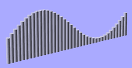
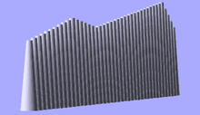

Chapter 1 -- General
OpenSCAD User Manual/The OpenSCAD Language
Introduction
OpenSCAD is a 2D/3D and solid modeling program which is based on a Functional programming language used to create models that are previewed on the screen, and rendered into 3D mesh which allows the model to be exported in a variety of 2D/3D file formats.
A script in the OpenSCAD language is used to create 2D or 3D models. This script is a free format list of action statements.
object();
variable = value;
operator() action();
operator() { action(); action(); }
operator() operator() { action(); action(); }
operator() { operator() action();
operator() { action(); action(); } }
- Objects
Objects are the building blocks for models, created by 2D and 3D primitives. Objects end in a semicolon ';'.
- Actions
Action statements include creating objects using primitives and assigning values to variables. Action statements also end in a semicolon ';'.
- Operators
Operators, or transformations, modify the location, color and other properties of objects. Operators use braces '{}' when their scope covers more than one action. More than one operator may be used for the same action or group of actions. Multiple operators are processed Right to Left, that is, the operator closest to the action is processed first. Operators do not end in semicolons ';', but the individual actions they contain do.
Examples
cube(5);
x = 4+y;
rotate(40) square(5,10);
translate([10,5]) { circle(5); square(4); }
rotate(60) color("red") { circle(5); square(4); }
color("blue") { translate([5,3,0]) sphere(5); rotate([45,0,45]) { cylinder(10); cube([5,6,7]); } }
Comments
Comments are a way of leaving notes within the script, or code, (either to yourself or to future programmers) describing how the code works, or what it does. Comments are not evaluated by the compiler, and should not be used to describe self-evident code.
OpenSCAD uses C++-style comments:
// This is a comment myvar = 10; // The rest of the line is a comment /* Multi-line comments can span multiple lines. */
Values and Data Types
A value in OpenSCAD is either a Number (like 42), a Boolean (like true), a String (like "foo"), a Range (like [0: 1: 10]), a Vector (like [1,2,3]), or the Undefined value (undef). Values can be stored in variables, passed as function arguments, and returned as function results.
[OpenSCAD is a dynamically typed language with a fixed set of data types. There are no type names, and no user defined types. Functions are not values. In fact, variables and functions occupy disjoint namespaces.]
Numbers
Numbers are the most important type of value in OpenSCAD, and they are written in the familiar decimal notation used in other languages. Eg, -1, 42, 0.5, 2.99792458e+8. [OpenSCAD does not support octal or hexadecimal notation for numbers.]
In additional to decimal numerals, the following names for special numbers are defined:
- PI
OpenSCAD has only a single kind of number, which is a 64 bit IEEE floating point number. [OpenSCAD does not distinguish integers and floating point numbers as two different types, nor does it support complex numbers.] Because OpenSCAD uses the IEEE floating point standard, there are a few deviations from the behaviour of numbers in mathematics:
- We use binary floating point. A fractional number is not represented exactly unless the denominator is a power of 2. For example, 0.2 (2/10) does not have an exact internal representation, but 0.25 (1/4) and 0.125 (1/8) are represented exactly.
- The largest representable number is about 1e308. If a numeric result is too large, then the result can be infinity (printed as inf by echo).
- The smallest representable number is about -1e308. If a numeric result is too small, then the result can be -infinity (printed as -inf by echo).
- If a numeric result is invalid, then the result can be Not A Number (printed as nan by echo).
- If a non-zero numeric result is too close to zero to be representable, then the result is -0 if the result is negative, otherwise it is 0. Zero (0) and negative zero (-0) are treated as two distinct numbers by some of the math operations, and are printed differently by 'echo', although they compare as equal.
The constants 'inf' and 'nan' are not supported as numeric constants by OpenSCAD, even though you can compute numbers that are printed this way by 'echo'. You can define variables with these values by using:
inf = 1e200 * 1e200; nan = 0 / 0; echo(inf,nan);
The value 'nan' is the only OpenSCAD value that is not equal to any other value, including itself. Although you can test if a variable 'x' has the undefined value using 'x == undef', you can't use 'x == 0/0' to test if x is Not A Number. Instead, you must use 'x != x' to test if x is nan.
Boolean Values
Booleans are truth values. There are two Boolean values, namely true and false.
A Boolean is passed as the argument to conditional statement 'if()'. conditional operator '? :',
and logical operators '!' (not), '&&' (and), and '||' (or). In all of these contexts, you can actually
pass any quantity. Most values are converted to 'true' in a Boolean context, the values that count as 'false' are:
- false
- 0 and -0
- ""
- []
- undef
Note that "false" (the string), [0] (a numeric vector),
[ [] ] (a vector containing an empty vector), [false]
(a vector containing the Boolean value false) and 0/0 (Not A Number) all count as true.
Strings
A string is a sequence of zero or more unicode characters. String values are used to specify file names when importing a file, and to display text for debugging purposes when using echo(). Strings can also be used with the new text() primitive added in 2015.03.
A string literal is written as a sequence of characters enclosed in quotation marks ", like this: "" (an empty string), or "this is a string".
To include a " character in a string literal, use \". To include a \ character in a string literal, use \\. The following escape sequences beginning with \ can be used within string literals:
- \" → "
- \\ → \
- \t → tab
- \n → newline
- \r → carriage return
- \u03a9 → Ω - see text() for further information on unicode characters
Note: This behavior is new since OpenSCAD-2011.04. You can upgrade old files using the following sed command: sed 's/\\/\\\\/g' non-escaped.scad > escaped.scad
Example:
echo("The quick brown fox \tjumps \"over\" the lazy dog.\rThe quick brown fox.\nThe \\lazy\\ dog.");
result
ECHO: "The quick brown fox jumps "over" the lazy dog.
The quick brown fox.
The \lazy\ dog."
old result
ECHO: "The quick brown fox \tjumps \"over\" the lazy dog.
The quick brown fox.\nThe \\lazy\\ dog."
Ranges
Ranges are used by for() loops and children(). They have 2 varieties:
- [<start>:<end>]
- [<start>:<increment>:<end>]
Although enclosed in square brackets [] , they are not vectors. They use colons : for separators rather than commas.
r1 = [0:10]; r2 = [0.5:2.5:20]; echo(r1); // ECHO: [0: 1: 10] echo(r2); // ECHO: [0.5: 2.5: 20]
You should avoid step values that cannot be represented exactly as binary floating point numbers. Integers are okay, as are fractional values whose denominator is a power of two. For example, 0.25 (1/4) and 0.125 (1/8) are safe, but 0.2 (2/10) should be avoided. The problem with these step values is that your range may have too many or too few elements, due to inexact arithmetic.
A missing <increment> defaults to 1. A range in the form [<start>:<end>] with <start> greater than <end> generates a warning and is equivalent to [<end>: 1: <start>]. A range in the form [<start>:1:<end>] with <start> greater than <end> does not generate a warning and is equivalent to []. The <increment> in a range may be negative (for versions after 2014).
The Undefined Value
The undefined value is a special value written as undef. It's the initial value of a variable that hasn't been assigned a value, and it is often returned as a result by functions or operations that are passed illegal arguments. Finally, undef can be used as a null value, equivalent to null or NULL in other programming languages.
All arithmetic expressions containing undef values evaluate as undef. In logical expressions, undef is equivalent to false. Relational operator expressions with undef evaluate as false except for undef==undef which is true.
Note that numeric operations may also return 'nan' (not-a-number) to indicate an illegal argument. For example, 0/false is undef, but 0/0 is 'nan'. Relational operators like < and > return false if passed illegal arguments. Although undef is a language value, 'nan' is not.
Variables
OpenSCAD variables are created by a statement with a name or identifier, assignment via an expression and a semicolon. The role of arrays, found in many imperative languages, is handled in OpenSCAD via vectors.
var = 25; xx = 1.25 * cos(50); y = 2*xx+var; logic = true; MyString = "This is a string"; a_vector = [1,2,3]; rr = a_vector[2]; // member of vector range1 = [-1.5:0.5:3]; // for() loop range xx = [0:5]; // alternate for() loop range
OpenSCAD is a Functional programming language, as such variables are bound to expressions and keep a single value during their entire lifetime due to the requirements of referential transparency. In imperative languages, such as C, the same behavior is seen as constants, which are typically contrasted with normal variables.
In other words OpenSCAD variables are more like constants, but with an important difference. If variables are assigned a value multiple times, only the last assigned value is used in all places in the code. See further discussion at Variables are set at compile-time, not run-time. This behavior is due to the need to supply variable input on the command line, via the use of -D variable=value option. OpenSCAD currently places that assignment at the end of the source code, and thus must allow a variable's value to be changed for this purpose.
Values cannot be modified during run time; all variables are effectively constants that do not change. Each variable retains its last assigned value at compile time, in line with Functional programming languages. Unlike Imperative languages, such as C, OpenSCAD is not an iterative language, and as such the concept of x = x + 1 is not valid. Understanding this concept leads to understanding the beauty of OpenSCAD.
- Before version 2015.03
It was not possible to do assignments at any place except the file top-level and module top-level. Inside an if/else or for loop, assign() was needed.
- Since version 2015.03
Variables can now be assigned in any scope. Note that assignments are only valid within the scope in which they are defined - you are still not allowed to leak values to an outer scope. See Scope of variables for more details.
a=0;
if (a==0)
{
a=1; // before 2015.03 this line would generate a Compile Error
// since 2015.03 no longer an error, but the value a=1 is confined to within the braces {}
}
Undefined variable
A non assigned variable has the special value undef. It could be tested in conditional expression, and returned by a function.
Example
echo("Variable a is ", a); // Variable a is undef
if (a==undef) {
echo("Variable a is tested undefined"); // Variable a is tested undefined
}
Scope of variables
When operators such as translate() and color() need to encompass more than one action ( actions end in ;), braces {} are needed to group the actions, creating a new, inner scope. When there is only one semicolon, braces are usually optional.
Each pair of braces creates a new scope inside the scope where they were used. Since 2015.03, new variables can be created within this new scope. New values can be given to variables which were created in an outer scope . These variables and their values are also available to further inner scopes created within this scope, but are not available to any thing outside this scope. Variables still have only the last value assigned within a scope.
// scope 1
a = 6; // create a
echo(a,b); // 6, undef
translate([5,0,0]){ // scope 1.1
a= 10;
b= 16; // create b
echo(a,b); // 100, 16 a=10; was overridden by later a=100;
color("blue") { // scope 1.1.1
echo(a,b); // 100, 20
cube();
b=20;
} // back to 1.1
echo(a,b); // 100, 16
a=100; // override a in 1.1
} // back to 1
echo(a,b); // 6, undef
color("red"){ // scope 1.2
cube();
echo(a,b); // 6, undef
} // back to 1
echo(a,b); // 6, undef
//In this example, scopes 1 and 1.1 are outer scopes to 1.1.1 but 1.2 is not.
- Anonymous scopes are not considered scopes:
{
angle = 45;
}
rotate(angle) square(10);
For() loops are not an exception to the rule about variables having only one value within a scope. A copy of loop contents is created for each pass. Each pass is given its own scope, allowing any variables to have unique values for that pass. No, you still can't do a=a+1;
Variables are set at compile-time, not run-time
Because OpenSCAD calculates its variable values at compile-time, not run-time, the last variable assignment, within a scope apply everywhere in that scope, or inner scopes thereof. It may be helpful to think of them as override-able constants rather than as variables.
// The value of 'a' reflects only the last set value a = 0; echo(a); // 5 a = 3; echo(a); // 5 a = 5;
While this appears to be counter-intuitive, it allows you to do some interesting things: for instance, if you set up your shared library files to have default values defined as variables at their root level, when you include that file in your own code, you can 're-define' or override those constants by simply assigning a new value to them. So changing constant values gives you more flexibility. If constants would never change, of course, you always can be sure having the value you see in any constant definition. Not so here, if you see a constant value definition at any other place this value could be different. Very flexible.
Special Variables
Special variables provide an alternate means of passing arguments to modules and functions. All variables starting with a '$' are special variables, similar to special variables in lisp. As such they are more dynamic than regular variables. (for more details see Other Language Features)
Vectors
A vector or list is a sequence of zero or more OpenSCAD values. Vectors are a collection of numeric or boolean values, variables, vectors, strings or any combination thereof. They can also be expressions which evaluate to one of these. Vectors handle the role of arrays found in many imperative languages. The information here also applies to lists and tables which use vectors for their data.
A vector has square brackets, [] enclosing zero or more items (elements or members), separated by commas. A vector can contain vectors, which contain vectors, etc.
- examples
[1,2,3] [a,5,b] [] [5.643] ["a","b","string"] [[1,r],[x,y,z,4,5]] [3, 5, [6,7], [[8,9],[10,[11,12],13], c, "string"] [4/3, 6*1.5, cos(60)]
use in OpenSCAD:
cube( [width,depth,height] ); // optional spaces shown for clarity translate( [x,y,z] ) polygon( [ [x0,y0], [x1,y1], [x2,y2] ] );
- creation
Vectors are created by writing the list of elements, separated by commas, and enclosed in square brackets. Variables are replaced by their values.
cube([10,15,20]); a1 = [1,2,3]; a2 = [4,5]; a3 = [6,7,8,9]; b = [a1,a2,a3]; // [ [1,2,3], [4,5], [6,7,8,9] ] note increased nesting depth
Indexing elements within vectors
Elements within vectors are numbered from 0 to n-1 where n is the length returned by len(). Address elements within vectors with the following notation:
e[5] // element no 5 (sixth) at 1st nesting level e[5][2] // element 2 of element 5 2nd nesting level e[5][2][0] // element 0 of 2 of 5 3rd nesting level e[5][2][0][1] // element 1 of 0 of 2 of 5 4th nesting level
e = [ [1], [], [3,4,5], "string", "x", [[10,11],[12,13,14],[[15,16],[17]]] ]; // length 6
address length element
e[0] 1 [1]
e[1] 0 []
e[5] 3 [ [10,11], [12,13,14], [[15,16],[17]] ]
e[5][1] 3 [ 12, 13, 14 ]
e[5][2] 2 [ [15,16], [17] ]
e[5][2][0] 2 [ 15, 16 ]
e[5][2][0][1] undef 16
e[3] 6 "string"
e[3 ][2] 1 "r"
s = [2,0,5]; a = 2;
s[a] undef 5
e[s[a]] 3 [ [10,11], [12,13,14], [[15,16],[17]] ]
Dot notation indexing
The first three elements of a vector can be accessed with an alternate dot notation:
e.x //equivalent to e[0] e.y //equivalent to e[1] e.z //equivalent to e[2]
Vector operators
concat
[Note: Requires version 2015.03]
concat() combines the elements of 2 or more vectors into a single vector. No change in nesting level is made.
vector1 = [1,2,3]; vector2 = [4]; vector3 = [5,6];
new_vector = concat(vector1, vector2, vector3); // [1,2,3,4,5,6]
string_vector = concat("abc","def"); // ["abc", "def"]
one_string = str(string_vector[0],string_vector[1]); // "abcdef"
len
len() is a function which returns the length of vectors or strings. Indices of elements are from [0] to [length-1].
- vector
- Returns the number of elements at this level.
- Single values, which are not vectors, return undef.
- string
- Returns the number of characters in string.
a = [1,2,3]; echo(len(a)); // 3
See example elements with lengths
Matrix
A matrix is a vector of vectors.
Example which defines a 2D rotation matrix
mr = [
[cos(angle), -sin(angle)],
[sin(angle), cos(angle)]
];
Getting input
Now we have variables, it would be nice to be able to get input into them instead of setting the values from code. There are a few functions to read data from DXF files, or you can set a variable with the -D switch on the command line.
Getting a point from a drawing
Getting a point is useful for reading an origin point in a 2D view in a technical drawing. The function dxf_cross reads the intersection of two lines on a layer you specify and returns the intersection point. This means that the point must be given with two lines in the DXF file, and not a point entity.
OriginPoint = dxf_cross(file="drawing.dxf", layer="SCAD.Origin",
origin=[0, 0], scale=1);
Getting a dimension value
You can read dimensions from a technical drawing. This can be useful to read a rotation angle, an extrusion height, or spacing between parts. In the drawing, create a dimension that does not show the dimension value, but an identifier. To read the value, you specify this identifier from your program:
TotalWidth = dxf_dim(file="drawing.dxf", name="TotalWidth",
layer="SCAD.Origin", origin=[0, 0], scale=1);
For a nice example of both functions, see Example009 and the image on the homepage of OpenSCAD.
Chapter 2 -- 3D Objects
OpenSCAD User Manual/The OpenSCAD Language
Primitive Solids
cube
Creates a cube in the first octant. When center is true, the cube is centered on the origin. Argument names are optional if given in the order shown here.
cube(size = [x,y,z], center = true/false); cube(size = x , center = true/false);
- parameters:
- size
- single value, cube with all sides this length
- 3 value array [x,y,z], cube with dimensions x, y and z.
- center
- false (default), 1st (positive) octant, one corner at (0,0,0)
- true, cube is centered at (0,0,0)
- size
default values: cube(); yields: cube(size = [1, 1, 1], center = false);
- examples:

equivalent scripts for this example cube(size = 18); cube(18); cube([18,18,18]); . cube(18,false); cube([18,18,18],false); cube([18,18,18],center=false); cube(size = [18,18,18], center = false); cube(center = false,size = [18,18,18] );

equivalent scripts for this example cube([18,28,8],true); box=[18,28,8];cube(box,true);
sphere
Creates a sphere at the origin of the coordinate system. The r argument name is optional. To use d instead of r, d must be named.
Parameters
- r
- Radius. This is the radius of the sphere. The resolution of the sphere is based on the size of the sphere and the $fa, $fs and $fn variables. For more information on these special variables look at: OpenSCAD_User_Manual/Other_Language_Features
- d
- Diameter. This is the diameter of the sphere.
- $fa
- Fragment angle in degrees
- $fs
- Fragment size in mm
- $fn
- Resolution
default values: sphere(); yields: sphere($fn = 0, $fa = 12, $fs = 2, r = 1);
Usage Examples
sphere(r = 1); sphere(r = 5); sphere(r = 10); sphere(d = 2); sphere(d = 10); sphere(d = 20);
// this creates a high resolution sphere with a 2mm radius sphere(2, $fn=100);
// also creates a 2mm high resolution sphere but this one // does not have as many small triangles on the poles of the sphere sphere(2, $fa=5, $fs=0.1);

cylinder
Creates a cylinder or cone centered about the z axis. When center is true, it is also centered vertically along the z axis.
Parameter names are optional if given in the order shown here. If a parameter is named, all following parameters must also be named.
NOTE: If r, d, d1 or d2 are used they must be named.
cylinder(h = height, r1 = BottomRadius, r2 = TopRadius, center = true/false);
- Parameters
- h : height of the cylinder or cone
- r : radius of cylinder. r1 = r2 = r.
- r1 : radius, bottom of cone.
- r2 : radius, top of cone.
- d : diameter of cylinder. r1 = r2 = d / 2. [Note: Requires version 2014.03]
- d1 : diameter, bottom of cone. r1 = d1 / 2. [Note: Requires version 2014.03]
- d2 : diameter, top of cone. r2 = d2 / 2. [Note: Requires version 2014.03]
- center
- false (default), z ranges from 0 to h
- true, z ranges from -h/2 to +h/2
- $fa : minimum angle (in degrees) of each fragment.
- $fs : minimum circumferential length of each fragment.
- $fn : fixed number of fragments in 360 degrees. Values of 3 or more override $fa and $fs
- $fa, $fs and $fn must be named parameters. click here for more details,.
defaults: cylinder(); yields: cylinder($fn = 0, $fa = 12, $fs = 2, h = 1, r1 = 1, r2 = 1, center = false);

equivalent scripts cylinder(h=15, r1=9.5, r2=19.5, center=false); cylinder( 15, 9.5, 19.5, false); cylinder( 15, 9.5, 19.5); cylinder( 15, 9.5, d2=39 ); cylinder( 15, d1=19, d2=39 ); cylinder( 15, d1=19, r2=19.5);

equivalent scripts cylinder(h=15, r1=10, r2=0, center=true); cylinder( 15, 10, 0, true); cylinder(h=15, d1=20, d2=0, center=true);

center = false

center = true
equivalent scripts cylinder(h=20, r=10, center=true); cylinder( 20, 10, 10,true); cylinder( 20, d=20, center=true); cylinder( 20,r1=10, d2=20, center=true); cylinder( 20,r1=10, d2=2*10, center=true);
- use of $fn
Larger values of $fn create smoother, more circular, surfaces at the cost of longer rendering time. Some use medium values during development for the faster rendering, then change to a larger value for the final F6 rendering.
However, use of small values can produce some interesting non circular objects. A few examples are show here:


scripts for these examples cylinder(20,20,20,$fn=3); cylinder(20,20,00,$fn=4); cylinder(20,20,10,$fn=4);
- undersized holes
Using cylinder() with difference() to place holes in objects creates undersized holes. This is because circular paths are approximated with polygons inscribed within in a circle. The points of the polygon are on the circle, but straight lines between are inside. To have all of the hole larger than the true circle, the polygon must lie wholly outside of the circle (circumscribed). Modules for circumscribed holes

script for this example
poly_n = 6;
color("blue") translate([0, 0, 0.02]) linear_extrude(0.1) circle(10, $fn=poly_n);
color("green") translate([0, 0, 0.01]) linear_extrude(0.1) circle(10, $fn=360);
color("purple") linear_extrude(0.1) circle(10/cos(180/poly_n), $fn=poly_n);
polyhedron
A polyhedron is the most general 3D primitive solid. It can be used to create any regular or irregular shape including those with concave as well as convex features. Curved surfaces are approximated by a series of flat surfaces.
polyhedron( points = [ [X0, Y0, Z0], [X1, Y1, Z1], ... ], triangles = [ [P0, P1, P2], ... ], convexity = N); // before 2014.03 polyhedron( points = [ [X0, Y0, Z0], [X1, Y1, Z1], ... ], faces = [ [P0, P1, P2, P3, ...], ... ], convexity = N); // 2014.03 & later
- Parameters
- points
- Vector of 3d points or vertices. Each point is in turn a vector, [x,y,z], of its coordinates.
- Points may be defined in any order. N points are referenced, in the order defined, as 0 to N-1.
- points
- triangles [Deprecated: triangles will be removed in future releases. Use faces parameter instead]
- Vector of faces that collectively enclose the solid. Each face is a vector containing the indices (0 based) of 3 points from the points vector.
- triangles [Deprecated: triangles will be removed in future releases. Use faces parameter instead]
- faces [Note: Requires version 2014.03]
- Vector of faces that collectively enclose the solid. Each face is a vector containing the indices (0 based) of 3 or more points from the points vector.
- Faces may be defined in any order. Define enough faces to fully enclose the solid, with no overlap.
- If points that describe a single face are not on the same plane, the face is automatically split into triangles as needed.
- faces [Note: Requires version 2014.03]
- convexity
- Integer. The convexity parameter specifies the maximum number of faces a ray intersecting the object might penetrate. This parameter is needed only for correct display of the object in OpenCSG preview mode. It has no effect on the polyhedron rendering. For display problems, setting it to 10 should work fine for most cases.
- convexity
default values: polyhedron(); yields: polyhedron(points = undef, faces = undef, convexity = 1);
It is arbitrary which point you start with, but all faces must have points ordered in the same direction . OpenSCAD prefers clockwise when looking at each face from outside inward. The back is viewed from the back, the bottom from the bottom, etc. Another way to remember this ordering requirement is to use the right-hand rule. Using your right-hand, stick your thumb up and curl your fingers as if giving the thumbs-up sign, point your thumb into the face, and order the points in the direction your fingers curl. Try this on the example below.
- Example 1 Using polyhedron to generate cube( [ 10, 7, 5 ] );


CubePoints = [ [ 0, 0, 0 ], //0 [ 10, 0, 0 ], //1 [ 10, 7, 0 ], //2 [ 0, 7, 0 ], //3 [ 0, 0, 5 ], //4 [ 10, 0, 5 ], //5 [ 10, 7, 5 ], //6 [ 0, 7, 5 ]]; //7 CubeFaces = [ [0,1,2,3], // bottom [4,5,1,0], // front [7,6,5,4], // top [5,6,2,1], // right [6,7,3,2], // back [7,4,0,3]]; // left polyhedron( CubePoints, CubeFaces );
equivalent descriptions of the bottom face [0,1,2,3], [0,1,2,3,0], [1,2,3,0], [2,3,0,1], [3,0,1,2], [0,1,2],[2,3,0], // 2 triangles with no overlap [1,2,3],[3,0,1], [1,2,3],[0,1,3],
- Example 2 A square base pyramid:

polyhedron(
points=[ [10,10,0],[10,-10,0],[-10,-10,0],[-10,10,0], // the four points at base
[0,0,10] ], // the apex point
faces=[ [0,1,4],[1,2,4],[2,3,4],[3,0,4], // each triangle side
[1,0,3],[2,1,3] ] // two triangles for square base
);
- Example 3 A triangular prism:

module prism(l, w, h){
polyhedron(
points=[[0,0,0], [l,0,0], [l,w,0], [0,w,0], [0,w,h], [l,w,h]],
faces=[[0,1,2,3],[5,4,3,2],[0,4,5,1],[0,3,4],[5,2,1]]
);
// preview unfolded (do not include in your function
z = 0.08;
separation = 2;
border = .2;
translate([0,w+separation,0])
cube([l,w,z]);
translate([0,w+separation+w+border,0])
cube([l,h,z]);
translate([0,w+separation+w+border+h+border,0])
cube([l,sqrt(w*w+h*h),z]);
translate([l+border,w+separation+w+border+h+border,0])
polyhedron(
points=[[0,0,0],[h,0,0],[0,sqrt(w*w+h*h),0], [0,0,z],[h,0,z],[0,sqrt(w*w+h*h),z]],
faces=[[0,1,2], [3,5,4], [0,3,4,1], [1,4,5,2], [2,5,3,0]]
);
translate([0-border,w+separation+w+border+h+border,0])
polyhedron(
points=[[0,0,0],[0-h,0,0],[0,sqrt(w*w+h*h),0], [0,0,z],[0-h,0,z],[0,sqrt(w*w+h*h),z]],
faces=[[1,0,2],[5,3,4],[0,1,4,3],[1,2,5,4],[2,0,3,5]]
);
}
prism(10, 5, 3);
Debugging polyhedra
Mistakes in defining polyhedra include not having all faces with the same order, overlap of faces and missing faces or portions of faces. As a general rule, the polyhedron faces should also satisfy manifold conditions:
- exactly two faces should meet at any polyhedron edge.
- if two faces have a vertex in common, they should be in the same cycle face-edge around the vertex.
The first rule eliminates polyhedra like two cubes with a common edge and not watertight models; the second excludes polyhedra like two cubes with a common vertex.
When viewed from the outside, the points describing each face must be in the same order . OpenSCAD prefers CW, and provides a mechanism for detecting CCW. When the thrown together view (F12) is used with F5, CCW faces are shown in pink. Reorder the points for incorrect faces. Rotate the object to view all faces. The pink view can be turned off with F10.
OpenSCAD allows, temporarily, commenting out part of the face descriptions so that only the remaining faces are displayed. Use // to comment out the rest of the line. Use /* and */ to start and end a comment block. This can be part of a line or extend over several lines. Viewing only part of the faces can be helpful in determining the right points for an individual face. Note that a solid is not shown, only the faces. If using F12, all faces have one pink side. Commenting some faces helps also to show any internal face.

CubeFaces = [ /* [0,1,2,3], // bottom [4,5,1,0], // front */ [7,6,5,4], // top /* [5,6,2,1], // right [6,7,3,2], // back */ [7,4,0,3]]; // left
After defining a polyhedron, its preview may seem correct. The polyhedron alone may even render fine. However, to be sure it is a valid manifold and that it can generate a valid STL file, union it with any cube and render it (F6). If the polyhedron disappears, it means that it is not correct. Revise the winding order of all faces and the two rules stated above.
Mis-ordered faces
- Example 4 a more complex polyhedron with mis-ordered faces
When you select 'Thrown together' from the view menu and compile the design (not compile and render!) the preview shows the mis-oriented polygons highlighted. Unfortunately this highlighting is not possible in the OpenCSG preview mode because it would interfere with the way the OpenCSG preview mode is implemented.)
Below you can see the code and the picture of such a problematic polyhedron, the bad polygons (faces or compositions of faces) are in pink.
// Bad polyhedron
polyhedron
(points = [
[0, -10, 60], [0, 10, 60], [0, 10, 0], [0, -10, 0], [60, -10, 60], [60, 10, 60],
[10, -10, 50], [10, 10, 50], [10, 10, 30], [10, -10, 30], [30, -10, 50], [30, 10, 50]
],
faces = [
[0,2,3], [0,1,2], [0,4,5], [0,5,1], [5,4,2], [2,4,3],
[6,8,9], [6,7,8], [6,10,11], [6,11,7], [10,8,11],
[10,9,8], [0,3,9], [9,0,6], [10,6, 0], [0,4,10],
[3,9,10], [3,10,4], [1,7,11], [1,11,5], [1,7,8],
[1,8,2], [2,8,11], [2,11,5]
]
);

A correct polyhedron would be the following:
polyhedron
(points = [
[0, -10, 60], [0, 10, 60], [0, 10, 0], [0, -10, 0], [60, -10, 60], [60, 10, 60],
[10, -10, 50], [10, 10, 50], [10, 10, 30], [10, -10, 30], [30, -10, 50], [30, 10, 50]
],
faces = [
[0,3,2], [0,2,1], [4,0,5], [5,0,1], [5,2,4], [4,2,3],
[6,8,9], [6,7,8], [6,10,11],[6,11,7], [10,8,11],
[10,9,8], [3,0,9], [9,0,6], [10,6, 0],[0,4,10],
[3,9,10], [3,10,4], [1,7,11], [1,11,5], [1,8,7],
[2,8,1], [8,2,11], [5,11,2]
]
);
- Beginner's tip
If you don't really understand "orientation", try to identify the mis-oriented pink faces and then invert the sequence of the references to the points vectors until you get it right. E.g. in the above example, the third triangle ([0,4,5]) was wrong and we fixed it as [4,0,5]. Remember that a face list is a circular list. In addition, you may select "Show Edges" from the "View Menu", print a screen capture and number both the points and the faces. In our example, the points are annotated in black and the faces in blue. Turn the object around and make a second copy from the back if needed. This way you can keep track.
- Clockwise Technique
Orientation is determined by clockwise circular indexing. This means that if you're looking at the triangle (in this case [4,0,5]) from the outside you'll see that the path is clockwise around the center of the face. The winding order [4,0,5] is clockwise and therefore good. The winding order [0,4,5] is counter-clockwise and therefore bad. Likewise, any other clockwise order of [4,0,5] works: [5,4,0] & [0,5,4] are good too. If you use the clockwise technique, you'll always have your faces outside (outside of OpenSCAD, other programs do use counter-clockwise as the outside though).
Think of it as a Left Hand Rule:
If you place your left hand on the face with your fingers curled in the direction of the order of the points, your thumb should point outward. If your thumb points inward, you need to reverse the winding order.

Succinct description of a 'Polyhedron'
* Points define all of the points/vertices in the shape. * Faces is a list of flat polygons that connect up the points/vertices.
Each point, in the point list, is defined with a 3-tuple x,y,z position specification. Points in the point list are automatically enumerated starting from zero for use in the faces list (0,1,2,3,... etc).
Each face, in the faces list, is defined by selecting 3 or more of the points (using the point order number) out of the point list.
e.g. faces=[ [0,1,2] ] defines a triangle from the first point (points are zero referenced) to the second point and then to the third point.
When looking at any face from the outside, the face must list all points in a clockwise order.
Point repetitions in a polyhedron point list
The point list of the polyhedron definition may have repetitions. When two or more points have the same coordinates they are considered the same polyhedron vertex. So, the following polyhedron:
points = [[ 0, 0, 0], [10, 0, 0], [ 0,10, 0],
[ 0, 0, 0], [10, 0, 0], [ 0,10, 0],
[ 0,10, 0], [10, 0, 0], [ 0, 0,10],
[ 0, 0, 0], [ 0, 0,10], [10, 0, 0],
[ 0, 0, 0], [ 0,10, 0], [ 0, 0,10]];
polyhedron(points, [[0,1,2], [3,4,5], [6,7,8], [9,10,11], [12,13,14]]);
define the same tetrahedron as:
points = [[0,0,0], [0,10,0], [10,0,0], [0,0,10]]; polyhedron(points, [[0,2,1], [0,1,3], [1,2,3], [0,3,2]]);
3D to 2D Projection
Using the projection() function, you can create 2d drawings from 3d models, and export them to the dxf format. It works by projecting a 3D model to the (x,y) plane, with z at 0. If cut=true, only points with z=0 are considered (effectively cutting the object), with cut=false(the default), points above and below the plane are considered as well (creating a proper projection).
Example: Consider example002.scad, that comes with OpenSCAD.

Then you can do a 'cut' projection, which gives you the 'slice' of the x-y plane with z=0.
projection(cut = true) example002();

You can also do an 'ordinary' projection, which gives a sort of 'shadow' of the object onto the xy plane.
projection(cut = false) example002();

Another Example
You can also use projection to get a 'side view' of an object. Let's take example002, and move it up, out of the X-Y plane, and rotate it:
translate([0,0,25]) rotate([90,0,0]) example002();

Now we can get a side view with projection()
projection() translate([0,0,25]) rotate([90,0,0]) example002();

Links:
- example021.scad from Clifford Wolf's site.
- More complicated example from Giles Bathgate's blog
Chapter 3 -- 2D Objects
OpenSCAD User Manual/The OpenSCAD Language
All 2D primitives can be transformed with 3D transformations. Usually used as part of a 3D extrusion. Although infinitely thin, they are rendered with a 1 thickness.
square
Creates a square or rectangle in the first quadrant. When center is true the square is centered on the origin. Argument names are optional if given in the order shown here.
square(size = [x, y], center = true/false); square(size = x , center = true/false);
- parameters:
- size
- single value, square with both sides this length
- 2 value array [x,y], rectangle with dimensions x and y
- center
- false (default), 1st (positive) quadrant, one corner at (0,0)
- true, square is centered at (0,0)
- size
default values: square(); yields: square(size = [1, 1], center = false);
- examples:

equivalent scripts for this example square(size = 10); square(10); square([10,10]); . square(10,false); square([10,10],false); square([10,10],center=false); square(size = [10, 10], center = false); square(center = false,size = [10, 10] );

equivalent scripts for this example square([20,10],true); a=[20,10];square(a,true);
circle
Creates a circle at the origin. All parameters, except r, must be named.
circle(r=radius | d=diameter);
- Parameters
- r : circle radius. r name is the only one optional with circle.
- circle resolution is based on size, using $fa or $fs.
- r : circle radius. r name is the only one optional with circle.
- For a small, high resolution circle you can make a large circle, then scale it down, or you could set $fn or other special variables. Note: These examples exceed the resolution of a 3d printer as well as of the display screen.
scale([1/100, 1/100, 1/100]) circle(200); // create a high resolution circle with a radius of 2. circle(2, $fn=50); // Another way.
- d : circle diameter (only available in versions later than 2014.03).
- $fa : minimum angle (in degrees) of each fragment.
- $fs : minimum circumferential length of each fragment.
- $fn : fixed number of fragments in 360 degrees. Values of 3 or more override $fa and $fs
- $fa, $fs and $fn must be named. click here for more details,.
defaults: circle(); yields: circle($fn = 0, $fa = 12, $fs = 2, r = 1);

equivalent scripts for this example circle(10); circle(r=10); circle(d=20); circle(d=2+9*2);
ellipse
An ellipse can be created from a circle by using either scale() or resize() to make the x and y dimensions unequal. See OpenSCAD User Manual/Transformations


equivalent scripts for this example resize([30,10])circle(d=20); scale([1.5,.5])circle(d=20);
regular polygon
A regular polygon of 3 or more sides can be created by using circle() with $fn set to the number of sides. The following two pieces of code are equivalent.
circle(r=1, $fn=4);
module regular_polygon(order = 4, r=1){
angles=[ for (i = [0:order-1]) i*(360/order) ];
coords=[ for (th=angles) [r*cos(th), r*sin(th)] ];
polygon(coords);
}
regular_polygon();
These result in the following shapes, where the polygon is inscribed within the circle with all sides (and angles) equal. One corner points to the positive x direction. For irregular shapes see the polygon primitive below.

script for these examples
translate([-42, 0]){circle(20,$fn=3);%circle(20,$fn=90);}
translate([ 0, 0]) circle(20,$fn=4);
translate([ 42, 0]) circle(20,$fn=5);
translate([-42,-42]) circle(20,$fn=6);
translate([ 0,-42]) circle(20,$fn=8);
translate([ 42,-42]) circle(20,$fn=12);
color("black"){
translate([-42, 0,1])text("3",7,,center);
translate([ 0, 0,1])text("4",7,,center);
translate([ 42, 0,1])text("5",7,,center);
translate([-42,-42,1])text("6",7,,center);
translate([ 0,-42,1])text("8",7,,center);
translate([ 42,-42,1])text("12",7,,center);
}
polygon
Creates a multiple sided shape from a list of x,y coordinates. A polygon is the most powerful 2D object. It can create anything that circle and squares can, as well as much more. This includes irregular shapes with both concave and convex edges. In addition it can place holes within that shape.
polygon(points = [ [x, y], ... ], paths = [ [p1, p2, p3..], ...], convexity = N);
- Parameters
- points
- The list of x,y points of the polygon. : A vector of 2 element vectors.
- Note: points are indexed from 0 to n-1.
- paths
- default
- If no path is specified, all points are used in the order listed.
- single vector
- The order to traverse the points. Uses indices from 0 to n-1. May be in a different order and use all or part, of the points listed.
- multiple vectors
- Creates primary and secondary shapes. Secondary shapes are subtracted from the primary shape (like difference). Secondary shapes may be wholly or partially within the primary shape.
- default
- A closed shape is created by returning from the last point specified to the first.
- convexity
-
- Integer number of "inward" curves, ie. expected path crossings of an arbitrary line through the polygon. See below.
defaults: polygon(); yields: polygon(points = undef, paths = undef, convexity = 1);
- Example no holes

equivalent scripts for this example
polygon(points=[[0,0],[100,0],[130,50],[30,50]]);
polygon([[0,0],[100,0],[130,50],[30,50]], paths=[[0,1,2,3]]);
polygon([[0,0],[100,0],[130,50],[30,50]],[[3,2,1,0]]);
polygon([[0,0],[100,0],[130,50],[30,50]],[[1,0,3,2]]);
a=[[0,0],[100,0],[130,50],[30,50]];
b=[[3,0,1,2]];
polygon(a);
polygon(a,b);
polygon(a,[[2,3,0,1,2]]);
- Example one hole

equivalent scripts for this example polygon(points=[[0,0],[100,0],[0,100],[10,10],[80,10],[10,80]], paths=[[0,1,2],[3,4,5]],convexity=10); triangle_points =[[0,0],[100,0],[0,100],[10,10],[80,10],[10,80]]; triangle_paths =[[0,1,2],[3,4,5]]; polygon(triangle_points,triangle_paths,10);
The 1st path vector, [0,1,2], selects the points, [0,0],[100,0],[0,100], for the primary shape. The 2nd path vector, [3,4,5], selects the points, [10,10],[80,10],[10,80], for the secondary shape. The secondary shape is subtracted from the primary ( think difference() ). Since the secondary is wholly within the primary, it leaves a shape with a hole.
- Example multi hole
[Note: Requires version 2015.03] (for use of concat())

//example polygon with multiple holes
a0 = [[0,0],[100,0],[130,50],[30,50]]; // main
b0 = [1,0,3,2];
a1 = [[20,20],[40,20],[30,30]]; // hole 1
b1 = [4,5,6];
a2 = [[50,20],[60,20],[40,30]]; // hole 2
b2 = [7,8,9];
a3 = [[65,10],[80,10],[80,40],[65,40]]; // hole 3
b3 = [10,11,12,13];
a4 = [[98,10],[115,40],[85,40],[85,10]]; // hole 4
b4 = [14,15,16,17];
a = concat (a0,a1,a2,a3,a4);
b = [b0,b1,b2,b3,b4];
polygon(a,b);
//alternate
polygon(a,[b0,b1,b2,b3,b4]);
- convexity
The convexity parameter specifies the maximum number of front sides (back sides) a ray intersecting the object might penetrate. This parameter is needed only for correct display of the object in OpenCSG preview mode and has no effect on the polyhedron rendering.

This image shows a 2D shape with a convexity of 4, as the ray indicated in red crosses the 2D shape a maximum of 4 times. The convexity of a 3D shape would be determined in a similar way. Setting it to 10 should work fine for most cases.
import_dxf
[Deprecated: import_dxf() will be removed in future releases. Use import() instead.]
Read a DXF file and create a 2D shape.
Example
linear_extrude(height = 5, center = true, convexity = 10) import_dxf(file = "example009.dxf", layer = "plate");
Text
The text module creates text as a 2D geometric object,
using fonts installed on the local system or provided as separate font file.
[Note: Requires version 2015.03]
Parameters
- text
- String. The text to generate.
- size
- Decimal. The generated text has an ascent (height above the baseline) of approximately the given value. Default is 10. Different fonts can vary somewhat and may not fill the size specified exactly, typically they render slightly smaller.
- font
- String. The name of the font that should be used. This is not the name of the font file, but the logical font name (internally handled by the fontconfig library). This can also include a style parameter, see below. A list of installed fonts & styles can be obtained using the font list dialog (Help -> Font List).
- halign
- String. The horizontal alignment for the text. Possible values are "left", "center" and "right". Default is "left".
- valign
- String. The vertical alignment for the text. Possible values are "top", "center", "baseline" and "bottom". Default is "baseline".
- spacing
- Decimal. Factor to increase/decrease the character spacing. The default value of 1 results in the normal spacing for the font, giving a value greater than 1 causes the letters to be spaced further apart.
- direction
- String. Direction of the text flow. Possible values are "ltr" (left-to-right), "rtl" (right-to-left), "ttb" (top-to-bottom) and "btt" (bottom-to-top). Default is "ltr".
- language
- String. The language of the text. Default is "en".
- script
- String. The script of the text. Default is "latin".
- $fn
- used for subdividing the curved path segments provided by freetype
Example

text("OpenSCAD");
- Notes
To allow specification of particular Unicode characters, you can specify them in a string with the following escape codes;
- \x03 - hex char-value (only hex values from 01 to 7f are supported)
- \u0123 - Unicode char with 4 hexadecimal digits (note: lowercase \u)
- \U012345 - Unicode char with 6 hexadecimal digits (note: uppercase \U)
The null character (NUL) is mapped to the space character (SP).
assert(version() == [2019, 5, 0]);
assert(ord(" ") == 32);
assert(ord("\x00") == 32);
assert(ord("\u0000") == 32);
assert(ord("\U000000") == 32);
Example
t="\u20AC10 \u263A"; // 10 euro and a smilie
Using Fonts & Styles
Fonts are specified by their logical font name; in addition a style parameter can be added to select a specific font style like "bold" or "italic", such as:
font="Liberation Sans:style=Bold Italic"
The font list dialog (available under Help > Font List) shows the font name and the font style for each available font. For reference, the dialog also displays the location of the font file. You can drag a font in the font list, into the editor window to use in the text() statement.

OpenSCAD includes the fonts Liberation Mono, Liberation Sans, and Liberation Serif. Hence, as fonts in general differ by platform type, use of these included fonts is likely to be portable across platforms.
For common/casual text usage, the specification of one of these fonts is recommended for this reason. Liberation Sans is the default font to encourage this.
In addition to the installed fonts, it's possible to add project specific font files. Supported font file formats are TrueType Fonts (*.ttf) and OpenType Fonts (*.otf). The files need to be registered with use<>.
use <ttf/paratype-serif/PTF55F.ttf>
After the registration, the font is listed in the font list dialog, so in case logical name of a font is unknown, it can be looked up as it was registered.
OpenSCAD uses fontconfig to find and manage fonts, so it's possible to list the system configured fonts on command line using the fontconfig tools in a format similar to the GUI dialog.
$ fc-list -f "%-60{{%{family[0]}%{:style[0]=}}}%{file}\n" | sort
...
Liberation Mono:style=Bold Italic /usr/share/fonts/truetype/liberation2/LiberationMono-BoldItalic.ttf
Liberation Mono:style=Bold /usr/share/fonts/truetype/liberation2/LiberationMono-Bold.ttf
Liberation Mono:style=Italic /usr/share/fonts/truetype/liberation2/LiberationMono-Italic.ttf
Liberation Mono:style=Regular /usr/share/fonts/truetype/liberation2/LiberationMono-Regular.ttf
...
Example

square(10);
translate([15, 15]) {
text("OpenSCAD", font = "Liberation Sans");
}
translate([15, 0]) {
text("OpenSCAD", font = "Liberation Sans:style=Bold Italic");
}
Alignment
Vertical alignment
- top
- The text is aligned with the top of the bounding box at the given Y coordinate.
- center
- The text is aligned with the center of the bounding box at the given Y coordinate.
- baseline
- The text is aligned with the font baseline at the given Y coordinate. This is the default.
- bottom
- The text is aligned with the bottom of the bounding box at the given Y coordinate.

text = "Align";
font = "Liberation Sans";
valign = [
[ 0, "top"],
[ 40, "center"],
[ 75, "baseline"],
[110, "bottom"]
];
for (a = valign) {
translate([10, 120 - a[0], 0]) {
color("red") cube([135, 1, 0.1]);
color("blue") cube([1, 20, 0.1]);
linear_extrude(height = 0.5) {
text(text = str(text,"_",a[1]), font = font, size = 20, valign = a[1]);
}
}
}
Horizontal alignment
- left
- The text is aligned with the left side of the bounding box at the given X coordinate. This is the default.
- center
- The text is aligned with the center of the bounding box at the given X coordinate.
- right
- The text is aligned with the right of the bounding box at the given X coordinate.

text = "Align";
font = "Liberation Sans";
halign = [
[10, "left"],
[50, "center"],
[90, "right"]
];
for (a = halign) {
translate([140, a[0], 0]) {
color("red") cube([115, 2,0.1]);
color("blue") cube([2, 20,0.1]);
linear_extrude(height = 0.5) {
text(text = str(text,"_",a[1]), font = font, size = 20, halign = a[1]);
}
}
}
3D text
Text can be changed from a 2 dimensional object into a 3D object by using the linear_extrude function.
//3d Text Example
linear_extrude(4)
text("Text");

2D to 3D Extrusion
Extrusion is the process of creating an object with a fixed cross-sectional profile. OpenSCAD provides two commands to create 3D solids from a 2D shape: linear_extrude() and rotate_extrude(). Linear extrusion is similar to pushing Playdoh through a press with a die of a specific shape.

Rotational extrusion is similar to the process of turning or "throwing" a bowl on the Potter's wheel.

Both extrusion methods work on a (possibly disjointed) 2D shape which exists on the X-Y plane. While transformations that operates on both 2D shapes and 3D solids can move a shape off the X-Y plane, when the extrusion is performed the end result is not very intuitive. What actually happens is that any information in the third coordinate (the Z coordinate) is ignored for any 2D shape, this process amounts to an implicit projection() performed on any 2D shape before the extrusion is executed. It is recommended to perform extrusion on shapes that remains strictly on the X-Y plane.
Linear Extrude
Linear Extrusion is a operation that takes a 2D object as input and generates a 3D object as a result.
In OpenSCAD Extrusion is always performed on the projection (shadow) of the 2d object xy plane and along the Z axis; so if you rotate or apply other transformations to the 2d object before extrusion, its shadow shape is what is extruded.
Although the extrusion is linear along the Z axis, a twist parameter is available that causes the object to be rotated around the Z axis as it is extruding upward. This can be used to rotate the object at it's center, as if it is a spiral pillar, or produce a helical extrusion around the Z axis, like a pig's tail.
A scale parameter is also included so that the object can be expanded or contracted over the extent of the extrusion, allowing extrusions to be flared inward or outward.
Usage
linear_extrude(height = 5, center = true, convexity = 10, twist = -fanrot, slices = 20, scale = 1.0, $fn = 16) {...}
You must use parameter names due to a backward compatibility issue.
height must be positive.
$fn is optional and specifies the resolution of the linear_extrude (higher number brings more "smoothness", but more computation time is needed).
If the extrusion fails for a non-trivial 2D shape, try setting the convexity parameter (the default is not 10, but 10 is a "good" value to try). See explanation further down.
Twist
Twist is the number of degrees of through which the shape is extruded. Setting the parameter twist = 360 extrudes through one revolution. The twist direction follows the left hand rule.

0° of Twist
linear_extrude(height = 10, center = true, convexity = 10, twist = 0) translate([2, 0, 0]) circle(r = 1);

-100° of Twist
linear_extrude(height = 10, center = true, convexity = 10, twist = -100) translate([2, 0, 0]) circle(r = 1);

100° of Twist
linear_extrude(height = 10, center = true, convexity = 10, twist = 100) translate([2, 0, 0]) circle(r = 1);

-500° of Twist
linear_extrude(height = 10, center = true, convexity = 10, twist = -500) translate([2, 0, 0]) circle(r = 1);
Center
It is similar to the parameter center of cylinders. If center is false the linear extrusion Z range is from 0 to height; if it is true, the range is from -height/2 to height/2.
center = true
linear_extrude(height = 10, center = true, convexity = 10, twist = -500) translate([2, 0, 0]) circle(r = 1);

center = false
linear_extrude(height = 10, center = false, convexity = 10, twist = -500) translate([2, 0, 0]) circle(r = 1);
Mesh Refinement
The slices parameter defines the number of intermediate points along the Z axis of the extrusion. Its default increases with the value of twist. Explicitly setting slices may improve the output refinement.

linear_extrude(height = 10, center = false, convexity = 10, twist = 360, slices = 100) translate([2, 0, 0]) circle(r = 1);
The special variables $fn, $fs and $fa can also be used to improve the output. If slices is not defined, its value is taken from the defined $fn value.

linear_extrude(height = 10, center = false, convexity = 10, twist = 360, $fn = 100) translate([2, 0, 0]) circle(r = 1);
Scale
Scales the 2D shape by this value over the height of the extrusion. Scale can be a scalar or a vector:
linear_extrude(height = 10, center = true, convexity = 10, scale=3) translate([2, 0, 0]) circle(r = 1);

linear_extrude(height = 10, center = true, convexity = 10, scale=[1,5], $fn=100) translate([2, 0, 0]) circle(r = 1);

Note that if scale is a vector, the resulting side walls may be nonplanar. Use twist=0 and the slices parameter to avoid asymmetry.
linear_extrude(height=10, scale=[1,0.1], slices=20, twist=0) polygon(points=[[0,0],[20,10],[20,-10]]);
Rotate Extrude
Rotational extrusion spins a 2D shape around the Z-axis to form a solid which has rotational symmetry. One way to think of this operation is to imagine a Potter's wheel placed on the X-Y plane with its axis of rotation pointing up towards +Z. Then place the to-be-made object on this virtual Potter's wheel (possibly extending down below the X-Y plane towards -Z). The to-be-made object is the cross-section of the object on the X-Y plane (keeping only the right half, X >= 0). That is the 2D shape that will be fed to rotate_extrude() as the child in order to generate this solid. Note that the object started on the X-Y plane but is tilted up (rotated +90 degrees about the X-axis) to extrude.
Since a 2D shape is rendered by OpenSCAD on the X-Y plane, an alternative way to think of this operation is as follows: spins a 2D shape around the Y-axis to form a solid. The resultant solid is placed so that its axis of rotation lies along the Z-axis.
Just like the linear_extrude, the extrusion is always performed on the projection of the 2D polygon to the XY plane. Transformations like rotate, translate, etc. applied to the 2D polygon before extrusion modify the projection of the 2D polygon to the XY plane and therefore also modify the appearance of the final 3D object.
- A translation in Z of the 2D polygon has no effect on the result (as also the projection is not affected).
- A translation in X increases the diameter of the final object.
- A translation in Y results in a shift of the final object in Z direction.
- A rotation about the X or Y axis distorts the cross section of the final object, as also the projection to the XY plane is distorted.
Don't get confused, as OpenSCAD renders 2D polygons with a certain height in the Z direction, so the 2D object (with its height) appears to have a bigger projection to the XY plane. But for the projection to the XY plane and also for the later extrusion only the base polygon without height is used.
It can not be used to produce a helix or screw threads.
The 2D shape must lie completely on either the right (recommended) or the left side of the Y-axis. More precisely speaking, every vertex of the shape must have either x >= 0 or x <= 0. If the shape spans the X axis a warning appears in the console windows and the rotate_extrude() is ignored. If the 2D shape touches the Y axis, i.e. at x=0, it must be a line that touches, not a point, as a point results in a zero thickness 3D object, which is invalid and results in a CGAL error. For OpenSCAD versions prior to 2016.xxxx, if the shape is in the negative axis the resulting faces are oriented inside-out, which may cause undesired effects.
Parameters
Usage
rotate_extrude(angle = 360, convexity = 2) {...}

You must use parameter names due to a backward compatibility issue.
- convexity : If the extrusion fails for a non-trival 2D shape, try setting the convexity parameter (the default is not 10, but 10 is a "good" value to try). See explanation further down.
- angle [Note: Requires version 2019.05] : Defaults to 360. Specifies the number of degrees to sweep, starting at the positive X axis. The direction of the sweep follows the Right Hand Rule, hence a negative angle sweeps clockwise.
- $fa : minimum angle (in degrees) of each fragment.
- $fs : minimum circumferential length of each fragment.
- $fn : fixed number of fragments in 360 degrees. Values of 3 or more override $fa and $fs
- $fa, $fs and $fn must be named parameters. click here for more details,.
Examples

→
A simple torus can be constructed using a rotational extrude.
rotate_extrude(convexity = 10) translate([2, 0, 0]) circle(r = 1);
Mesh Refinement

→
Increasing the number of fragments composing the 2D shape improves the quality of the mesh, but takes longer to render.
rotate_extrude(convexity = 10) translate([2, 0, 0]) circle(r = 1, $fn = 100);
→
The number of fragments used by the extrusion can also be increased.
rotate_extrude(convexity = 10, $fn = 100) translate([2, 0, 0]) circle(r = 1, $fn = 100);
Using the parameter angle (with OpenSCAD versions 2016.xx), a hook can be modeled .

translate([0,60,0])
rotate_extrude(angle=270, convexity=10)
translate([40, 0]) circle(10);
rotate_extrude(angle=90, convexity=10)
translate([20, 0]) circle(10);
translate([20,0,0])
rotate([90,0,0]) cylinder(r=10,h=80);
Extruding a Polygon
Extrusion can also be performed on polygons with points chosen by the user.
Here is a simple polygon and its 200 step rotational extrusion. (Note it has been rotated 90 degrees to show how the rotation appears; the rotate_extrude() needs it flat).
rotate([90,0,0]) polygon( points=[[0,0],[2,1],[1,2],[1,3],[3,4],[0,5]] );
rotate_extrude($fn=200) polygon( points=[[0,0],[2,1],[1,2],[1,3],[3,4],[0,5]] );

→ →
→
For more information on polygons, please see: 2D Primitives: Polygon.
Description of extrude parameters
Extrude parameters for all extrusion modes
| convexity | Integer. The convexity parameter specifies the maximum number of front sides (or back sides) a ray intersecting the object might penetrate.
This parameter is only needed for correctly displaying the object in OpenCSG preview mode and has no effect on the polyhedron rendering. |
This image shows a 2D shape with a convexity of 2, as the ray indicated in red crosses the 2D shape a maximum of 4 times (2 front sides and 2 back sides). The convexity of a 3D shape would be determined in a similar way. Setting it to 10 should work fine for most cases. Just setting high numbers in general may result in slower preview rendering.
Extrude parameters for linear extrusion only
| height | The extrusion height |
| center | If true, the solid is centered after extrusion |
| twist | The extrusion twist in degrees |
| slices | Similar to special variable $fn without being passed down to the child 2D shape. |
| scale | Scales the 2D shape by this value over the height of the extrusion. |
Chapter 4 -- Transform
OpenSCAD User Manual/The OpenSCAD Language
Basic concept
Transformation affect the child nodes and as the name implies transforms them in various ways such as moving/rotating or scaling the child. Cascading transformations are used to apply a variety of transforms to a final child. Cascading is achieved by nesting statements i.e.
rotate([45,45,45])
translate([10,20,30])
cube(10);
Transformations can be applied to a group of child nodes by using '{' and '}' to enclose the subtree e.g.
translate([0,0,-5])
{
cube(10);
cylinder(r=5,h=10);
}
Transformations are written before the object they affect.
Imagine commands like translate, mirror and scale as verbs. Commands like color are like adjectives that describe the object.
Notice that there is no semicolon following transformation command.
Advanced concept
As OpenSCAD uses different libraries to implement capabilities this can introduce some inconsistencies to the F5 preview behaviour of transformations. Traditional transforms (translate, rotate, scale, mirror & multimatrix) are performed using OpenGL in preview, while other more advanced transforms, such as resize, perform a CGAL operation, behaving like a CSG operation affecting the underlying object, not just transforming it. In particular this can affect the display of modifier characters, specifically "#" and "%", where the highlight may not display intuitively, such as highlighting the pre-resized object, but highlighting the post-scaled object.
scale
Scales its child elements using the specified vector. The argument name is optional.
Usage Example:
scale(v = [x, y, z]) { ... }
cube(10); translate([15,0,0]) scale([0.5,1,2]) cube(10);

resize
Modifies the size of the child object to match the given x,y, and z.
resize() is a CGAL operation, and like others such as render() operates with full geometry, so even in preview this takes time to process.
Usage Example:
// resize the sphere to extend 30 in x, 60 in y, and 10 in the z directions. resize(newsize=[30,60,10]) sphere(r=10);

If x,y, or z is 0 then that dimension is left as-is.
// resize the 1x1x1 cube to 2x2x1 resize([2,2,0]) cube();
If the 'auto' parameter is set to true, it auto-scales any 0-dimensions to match. For example.
// resize the 1x2x0.5 cube to 7x14x3.5 resize([7,0,0], auto=true) cube([1,2,0.5]);
The 'auto' parameter can also be used if you only wish to auto-scale a single dimension, and leave the other as-is.
// resize to 10x8x1. Note that the z dimension is left alone. resize([10,0,0], auto=[true,true,false]) cube([5,4,1]);
rotate
Rotates its child 'a' degrees about the axis of the coordinate system or around an arbitrary axis. The argument names are optional if the arguments are given in the same order as specified.
//Usage:
rotate(a = deg_a, v = [x, y, z]) { ... }
// or
rotate(deg_a, [x, y, z]) { ... }
rotate(a = [deg_x, deg_y, deg_z]) { ... }
rotate([deg_x, deg_y, deg_z]) { ... }
The 'a' argument (deg_a) can be an array, as expressed in the later usage above; when deg_a is an array, the 'v' argument is ignored. Where 'a' specifies multiple axes then the rotation is applied in the following order: x, y, z. That means the code:
rotate(a=[ax,ay,az]) {...}
is equivalent to:
rotate(a=[0,0,az]) rotate(a=[0,ay,0]) rotate(a=[ax,0,0]) {...}
The optional argument 'v' is a vector and allows you to set an arbitrary axis about which the object is rotated.
For example, to flip an object upside-down, you can rotate your object 180 degrees around the 'y' axis.
rotate(a=[0,180,0]) { ... }
This is frequently simplified to
rotate([0,180,0]) { ... }
When specifying a single axis the 'v' argument allows you to specify which axis is the basis for rotation. For example, the equivalent to the above, to rotate just around y
rotate(a=180, v=[0,1,0]) { ... }
When specifying a single axis, 'v' is a vector defining an arbitrary axis for rotation; this is different from the multiple axis above. For example, rotate your object 45 degrees around the axis defined by the vector [1,1,0],
rotate(a=45, v=[1,1,0]) { ... }

Rotate with a single scalar argument rotates around the Z axis. This is useful in 2D contexts where that is the only axis for rotation. For example:
rotate(45) square(10);

Rotation rule help
For the case of:
rotate([a, b, c]) { ... };
"a" is a rotation about the X axis, from the +Y axis, toward the +Z axis.
"b" is a rotation about the Y axis, from the +Z axis, toward the +X axis.
"c" is a rotation about the Z axis, from the +X axis, toward the +Y axis.
These are all cases of the Right Hand Rule. Point your right thumb along the positive axis, your fingers show the direction of rotation.
Thus if "a" is fixed to zero, and "b" and "c" are manipulated appropriately, this is the spherical coordinate system.
So, to construct a cylinder from the origin to some other point (x,y,z):
x= 10; y = 10; z = 10; // point coordinates of end of cylinder
length = norm([x,y,z]); // radial distance
b = acos(z/length); // inclination angle
c = atan2(y,x); // azimuthal angle
rotate([0, b, c])
cylinder(h=length, r=0.5);
%cube([x,y,z]); // corner of cube should coincide with end of cylinder

translate
Translates (moves) its child elements along the specified vector. The argument name is optional.
Example:
translate(v = [x, y, z]) { ... }
cube(2,center = true); translate([5,0,0]) sphere(1,center = true);

mirror
Mirrors the child element on a plane through the origin. The argument to mirror() is the normal vector of a plane intersecting the origin through which to mirror the object.
Function signature:
mirror(v= [x, y, z] ) { ... }
Examples
The original is on the right side. Note that mirror doesn't make a copy. Like rotate and scale, it changes the object.

hand(); // originalmirror([1,0,0]) hand();
hand(); // originalmirror([1,1,0]) hand();
hand(); // originalmirror([1,1,1]) hand();
rotate([0,0,10]) cube([3,2,1]); mirror([1,0,0]) translate([1,0,0]) rotate([0,0,10]) cube([3,2,1]);

multmatrix
Multiplies the geometry of all child elements with the given affine transformation matrix, where the matrix is 4×3 - a vector of 3 row vectors with 4 elements each, or a 4×4 matrix with the 4th row always forced to [0,0,0,1].
Usage: multmatrix(m = [...]) { ... }
This is a breakdown of what you can do with the independent elements in the matrix (for the first three rows):
| [Scale X] | [Shear X along Y] | [Shear X along Z] | [Translate X] |
| [Shear Y along X] | [Scale Y] | [Shear Y along Z] | [Translate Y] |
| [Shear Z along X] | [Shear Z along Y] | [Scale Z] | [Translate Z] |
The fourth row is forced to [0,0,0,1] and can be omitted unless you are combining matrices before passing to multmatrix, as it is not processed in OpenSCAD. Each matrix operates on the points of the given geometry as if each vertex is a 4 element vector consisting of a 3D vector with an implicit 1 as its 4th element, such as v=[x, y, z, 1]. The role of the implicit fourth row of m is to preserve the implicit 1 in the 4th element of the vectors, permitting the translations to work. The operation of multmatrix therefore performs m*v for each vertex v. Any elements (other than the 4th row) not specified in m are treated as zeros.
This example rotates by 45 degrees in the XY plane and translates by [10,20,30], i.e. the same as translate([10,20,30]) rotate([0,0,45]) would do.
angle=45;
multmatrix(m = [ [cos(angle), -sin(angle), 0, 10],
[sin(angle), cos(angle), 0, 20],
[ 0, 0, 1, 30],
[ 0, 0, 0, 1]
]) union() {
cylinder(r=10.0,h=10,center=false);
cube(size=[10,10,10],center=false);
}
The following example demonstrates combining affine transformation matrices by matrix multiplication, producing in the final version a transformation equivalent to rotate([0, -35, 0]) translate([40, 0, 0]) Obj();. Note that the signs on the sin function appear to be in a different order than the above example, because the positive one must be ordered as x into y, y into z, z into x for the rotation angles to correspond to rotation about the other axis in a right-handed coordinate system.
y_ang=-35;
mrot_y = [ [ cos(y_ang), 0, sin(y_ang), 0],
[ 0, 1, 0, 0],
[-sin(y_ang), 0, cos(y_ang), 0],
[ 0, 0, 0, 1]
];
mtrans_x = [ [1, 0, 0, 40],
[0, 1, 0, 0],
[0, 0, 1, 0],
[0, 0, 0, 1]
];
module Obj() {
cylinder(r=10.0,h=10,center=false);
cube(size=[10,10,10],center=false);
}
echo(mrot_y*mtrans_x);
Obj();
multmatrix(mtrans_x) Obj();
multmatrix(mrot_y * mtrans_x) Obj();
This example skews a model, which is not possible with the other transformations.
M = [ [ 1 , 0 , 0 , 0 ],
[ 0 , 1 , 0.7, 0 ], // The "0.7" is the skew value; pushed along the y axis as z changes.
[ 0 , 0 , 1 , 0 ],
[ 0 , 0 , 0 , 1 ] ] ;
multmatrix(M) { union() {
cylinder(r=10.0,h=10,center=false);
cube(size=[10,10,10],center=false);
} }
More?
Learn more about it here:
color
Displays the child elements using the specified RGB color + alpha value. This is only used for the F5 preview as CGAL and STL (F6) do not currently support color. The alpha value defaults to 1.0 (opaque) if not specified.
Function signature:
color( c = [r, g, b, a] ) { ... }
color( c = [r, g, b], alpha = 1.0 ) { ... }
color( "#hexvalue" ) { ... }
color( "colorname", 1.0 ) { ... }
Note that the r, g, b, a values are limited to floating point values in the range [0,1] rather than the more traditional integers { 0 ... 255 }. However, nothing prevents you to using R, G, B values from {0 ... 255} with appropriate scaling: color([ R/255, G/255, B/255 ]) { ... }
[Note: Requires version 2011.12]
Colors can also be defined by name (case insensitive). For example, to create a red sphere, you can write color("red") sphere(5);. Alpha is specified as an extra parameter for named colors: color("Blue",0.5) cube(5);
[Note: Requires version 2019.05]
Hex values can be given in 4 formats, #rgb, #rgba, #rrggbb and #rrggbbaa. If the alpha value is given in both the hex value and as separate alpha parameter, the alpha parameter takes precedence.
The available color names are taken from the World Wide Web consortium's SVG color list. A chart of the color names is as follows,
(note that both spellings of grey/gray including slategrey/slategray etc are valid):
|
|
|
|
| |||||||||||||||||||||||||||||||||||||||||||||||||||||||||||||||||||||||||||||||||||||||||||||||||||||||||||||||||||||||||||||||||||||||||||||||||||||||||
Example

Here's a code fragment that draws a wavy multicolor object
for(i=[0:36]) {
for(j=[0:36]) {
color( [0.5+sin(10*i)/2, 0.5+sin(10*j)/2, 0.5+sin(10*(i+j))/2] )
translate( [i, j, 0] )
cube( size = [1, 1, 11+10*cos(10*i)*sin(10*j)] );
}
}
↗ Being that -1<=sin(x)<=1 then 0<=(1/2 + sin(x)/2)<=1 , allowing for the RGB components assigned to color to remain within the [0,1] interval.
Chart based on "Web Colors" from Wikipedia
Example 2
In cases where you want to optionally set a color based on a parameter you can use the following trick:
module myModule(withColors=false) {
c=withColors?"red":undef;
color(c) circle(r=10);
}
Setting the colorname to undef keeps the default colors.
offset
[Note: Requires version 2015.03]
Offset generates a new 2d interior or exterior outline from an existing outline. There are two modes of operation. radial and offset. The offset method creates a new outline whose sides are a fixed distance outer (delta > 0) or inner (delta < 0) from the original outline. The radial method creates a new outline as if a circle of some radius is rotated around the exterior (r>0) or interior (r<0) original outline.
The construction methods can either produce an outline that is interior or exterior to the original outline. For exterior outlines the corners can be given an optional chamfer.
Offset is useful for making thin walls by subtracting a negative-offset construction from the original, or the original from a Positive offset construction.
Offset can be used to simulate some common solid modeling operations:
- Fillet: offset(r=-3) offset(delta=+3) rounds all inside (concave) corners, and leaves flat walls unchanged. However, holes less than 2*r in diameter vanish.
- Round: offset(r=+3) offset(delta=-3) rounds all outside (convex) corners, and leaves flat walls unchanged. However, walls less than 2*r thick vanish.
- Parameters
- r
- Double. Amount to offset the polygon. When negative, the polygon is offset inward. R specifies the radius of the circle that is rotated about the outline, either inside or outside. This mode produces rounded corners.
- delta
- Double. Amount to offset the polygon. Delta specifies the distance of the new outline from the original outline, and therefore reproduces angled corners. When negative, the polygon is offset inward. No inward perimeter is generated in places where the perimeter would cross itself.
- chamfer
- Boolean. (default false) When using the delta parameter, this flag defines if edges should be chamfered (cut off with a straight line) or not (extended to their intersection).


Examples

// Example 1
linear_extrude(height = 60, twist = 90, slices = 60) {
difference() {
offset(r = 10) {
square(20, center = true);
}
offset(r = 8) {
square(20, center = true);
}
}
}
// Example 2
module fillet(r) {
offset(r = -r) {
offset(delta = r) {
children();
}
}
}
minkowski


Displays the minkowski sum of child nodes.
Usage example:
Say you have a flat box, and you want a rounded edge. There are multiple ways to do this (for example, see hull below), but minkowski is elegant. Take your box, and a cylinder:
$fn=50; cube([10,10,1]); cylinder(r=2,h=1);
Then, do a minkowski sum of them (note that the outer dimensions of the box are now 10+2+2 = 14 units by 14 units by 2 units high as the heights of the objects are summed):
$fn=50;
minkowski()
{
cube([10,10,1]);
cylinder(r=2,h=1);
}
NB: The origin of the second object is used for the addition. If the second object is not centered, then the addition is asymmetric. The following minkowski sums are different: the first expands the original cube by 0.5 units in all directions, both positive and negative. The second expands it by +1 in each positive direction, but doesn't expand in the negative directions.
minkowski() {
cube([10, 10, 1]);
cylinder(1, center=true);
}
minkowski() {
cube([10, 10, 1]);
cylinder(1);
}
Warning: for high values of $fn the minkowski sum may end up consuming lots of CPU and memory, since it has to combine every child node of each element with all the nodes of each other element. So if for example $fn=100 and you combine two cylinders, then it does not just perform 200 operations as with two independent cylinders, but 100*100 = 10000 operations.
hull


Displays the convex hull of child nodes.
Usage example:
hull() {
translate([15,10,0]) circle(10);
circle(10);
}
The Hull of 2D objects uses their projections (shadows) on the xy plane, and produces a result on the xy plane. Their Z-height is not used in the operation.
Combining transformations
When combining transformations, it is a sequential process, but going right-to-left. That is
rotate( ... ) translate ( ... ) cube(5) ;
would first move the cube, and then move it in an arc (while also rotating it by the same angle) at the radius given by the translation.
translate ( ... ) rotate( ... ) cube(5) ;
would first rotate the cube and then move it to the offset defined by the translate.
color("red") translate([0,10,0]) rotate([45,0,0]) cube(5);
color("green") rotate([45,0,0]) translate([0,10,0]) cube(5);
Chapter 5 -- Boolean combination
OpenSCAD User Manual/The OpenSCAD Language
boolean overview
2D examples

union ( or )
circle + square
difference ( and not )
square - circle
difference ( and not )
circle - square
intersection ( and )
circle - (circle - square)
union() {square(10);circle(10);} // square or circle
difference() {square(10);circle(10);} // square and not circle
difference() {circle(10);square(10);} // circle and not square
intersection(){square(10);circle(10);} // square and circle
3D examples

union ( or )
sphere + cube
difference ( and not )
cube - sphere
difference ( and not )
sphere - cube
intersection ( and )
sphere - (sphere - cube)
union() {cube(12, center=true); sphere(8);} // cube or sphere
difference() {cube(12, center=true); sphere(8);} // cube and not sphere
difference() {sphere(8); cube(12, center=true);} // sphere and not cube
intersection(){cube(12, center=true); sphere(8);} // cube and sphere
union
Creates a union of all its child nodes. This is the sum of all children (logical or).
May be used with either 2D or 3D objects, but don't mix them.

//Usage example:
union() {
cylinder (h = 4, r=1, center = true, $fn=100);
rotate ([90,0,0]) cylinder (h = 4, r=0.9, center = true, $fn=100);
}
Remark: union is implicit when not used. But it is mandatory, for example, in difference to group first child nodes into one.
Note: It is mandatory for all unions, explicit or implicit, that external faces to be merged not be coincident. Failure to follow this rule results in a design with undefined behavior, and can result in a render which is not manifold (with zero volume portions, or portions inside out), which typically leads to a warning and sometimes removal of a portion of the design from the rendered output. (This can also result in flickering effects during the preview.) This requirement is not a bug, but an intrinsic property of floating point comparisons and the fundamental inability to exactly represent irrational numbers such as those resulting from most rotations. As an example, this is an invalid OpenSCAD program, and will at least lead to a warning on most platforms:
// Invalid!
size = 10;
rotation = 17;
union() {
rotate([rotation, 0, 0])
cube(size);
rotate([rotation, 0, 0])
translate([0, 0, size])
cube([2, 3, 4]);
}
The solution is to always use a small value called an epsilon when merging adjacent faces like this to guarantee overlap. Note the 0.01 eps value used in TWO locations, so that the external result is equivalent to what was intended:
// Correct!
size = 10;
rotation = 17;
eps = 0.01;
union() {
rotate([rotation, 0, 0])
cube(size);
rotate([rotation, 0, 0])
translate([0, 0, size-eps])
cube([2, 3, 4+eps]);
}
difference
Subtracts the 2nd (and all further) child nodes from the first one (logical and not).
May be used with either 2D or 3D objects, but don't mix them.

Usage example:
difference() {
cylinder (h = 4, r=1, center = true, $fn=100);
rotate ([90,0,0]) cylinder (h = 4, r=0.9, center = true, $fn=100);
}
Note: It is mandatory that surfaces that are to be removed by a difference operation have an overlap, and that the negative piece being removed extends fully outside of the volume it is removing that surface from. Failure to follow this rule can cause preview artifacts and can result in non-manifold render warnings or the removal of pieces from the render output. See the description above in union for why this is required and an example of how to do this by this using a small epsilon value.
difference with multiple children
Note, in the second instance, the result of adding a union of the 1st and 2nd children.

// Usage example for difference of multiple children:
$fn=90;
difference(){
cylinder(r=5,h=20,center=true);
rotate([00,140,-45]) color("LightBlue") cylinder(r=2,h=25,center=true);
rotate([00,40,-50]) cylinder(r=2,h=30,center=true);
translate([0,0,-10])rotate([00,40,-50]) cylinder(r=1.4,h=30,center=true);
}
// second instance with added union
translate([10,10,0]){
difference(){
union(){ // combine 1st and 2nd children
cylinder(r=5,h=20,center=true);
rotate([00,140,-45]) color("LightBlue") cylinder(r=2,h=25,center=true);
}
rotate([00,40,-50]) cylinder(r=2,h=30,center=true);
translate([0,0,-10])rotate([00,40,-50]) cylinder(r=1.4,h=30,center=true);
}
}
intersection
Creates the intersection of all child nodes. This keeps the overlapping portion (logical and).
Only the area which is common or shared by all children is retained.
May be used with either 2D or 3D objects, but don't mix them.

//Usage example:
intersection() {
cylinder (h = 4, r=1, center = true, $fn=100);
rotate ([90,0,0]) cylinder (h = 4, r=0.9, center = true, $fn=100);
}
render
Warning: Using render, always calculates the CSG model for this tree (even in OpenCSG preview mode). This can make previewing very slow and OpenSCAD to appear to hang/freeze.
Usage example:
render(convexity = 1) { ... }
| convexity | Integer. The convexity parameter specifies the maximum number of front and back sides a ray intersecting the object might penetrate. This parameter is only needed for correctly displaying the object in OpenCSG preview mode and has no effect on the polyhedron rendering. |
This image shows a 2D shape with a convexity of 4, as the ray indicated in red crosses the 2D shape a maximum of 4 times. The convexity of a 3D shape would be determined in a similar way. Setting it to 10 should work fine for most cases.
Chapter 6 -- Other Functions and Operators
OpenSCAD User Manual/The OpenSCAD Language
Conditional and Iterator Functions
For loop
Evaluate each value in a range or vector, applying it to the following Action.
for(variable = [start : increment : end]) for(variable = [start : end]) for(variable = [vector])
parameters
- As a range [ start : <increment : > end ] (see section on range)
- Note: For range, values are separated by colons rather than commas used in vectors.
- start - initial value
- increment or step - amount to increase the value, optional, default = 1
- end - stop when next value would be past end
- examples:
for (a =[3:5])echo(a); // 3 4 5
for (a =[3:0]){echo(a);} // 0 1 2 3 start > end is invalid, deprecated by 2015.3
for (a =[3:0.5:5])echo(a); // 3 3.5 4 4.5 5
for (a =[0:2:5])echo(a); // 0 2 4 a never equals end
for (a =[3:-2:-1])echo(a); // 3 1 -1 negative increment requires 2015.3
be sure end < start
- As a vector
- The Action is evaluated for each element of the vector
for (a =[3,4,1,5])echo(a); // 3 4 1 5
for (a =[0.3,PI,1,99]){echo(a);} // 0.3 3.14159 1 99
x1=2; x2=8; x3=5.5;
for (a =[x1,x2,x3]){echo(a);} // 2 8 5.5
for (a =[[1,2],6,"s",[[3,4],[5,6]]])echo(a); // [1,2] 6 "s" [[3,4],[5,6]]
- The vector can be described elsewhere, like 'for each' in other languages
animals = ["elephants", "snakes", "tigers", "giraffes"];
for(animal = animals)
echo(str("I've been to the zoo and saw ", animal));
// "I've been to the zoo and saw elephants", for each animal
for() is an Operator. Operators require braces {} if more than one Action is within it scope. Actions end in semicolons, Operators do not.
for() is not an exception to the rule about variables having only one value within a scope. Each evaluation is given its own scope, allowing any variables to have unique values. No, you still can't do a=a+1;
Remember this is not an iterative language, the for() does not loop in the programmatic sense, it builds a tree of objects one branch for each item in the range/vector, inside each branch the 'variable' is a specific and separate instantiation or scope.
Hence:
for (i=[0:3])
translate([i*10,0,0])
cube(i+1);
Produces: [See Design/Display-CSG-Tree menu]
group() {
group() {
multmatrix([[1, 0, 0, 0], [0, 1, 0, 0], [0, 0, 1, 0], [0, 0, 0, 1]]) {
cube(size = [1, 1, 1], center = false);
}
multmatrix([[1, 0, 0, 10], [0, 1, 0, 0], [0, 0, 1, 0], [0, 0, 0, 1]]) {
cube(size = [2, 2, 2], center = false);
}
multmatrix([[1, 0, 0, 20], [0, 1, 0, 0], [0, 0, 1, 0], [0, 0, 0, 1]]) {
cube(size = [3, 3, 3], center = false);
}
multmatrix([[1, 0, 0, 30], [0, 1, 0, 0], [0, 0, 1, 0], [0, 0, 0, 1]]) {
cube(size = [4, 4, 4], center = false);
}
}
}
While the group() is built sequentially, all instances of the for() exist as separate entities, they do not iterate one piece of code sequentially.
- Nested for()
While it is reasonable to nest multiple for() statements such as:
for(z=[-180:45:+180])
for(x=[10:5:50])
rotate([0,0,z]) translate([x,0,0]) cube(1);
instead, all ranges/vectors can be included in the same for() operator.
for ( variable1 = <range or vector> , variable2 = <range or vector> ) <do something using both variables>

example for() nested 3 deep
color_vec = ["black","red","blue","green","pink","purple"];
for (x = [-20:10:20] )
for (y = [0:4] )color(color_vec[y])
for (z = [0,4,10] )
{translate([x,y*5-10,z])cube();}
shorthand nesting for same result
color_vec = ["black","red","blue","green","pink","purple"];
for (x = [-20:10:20],
y = [0:4],
z = [0,4,10] )
translate([x,y*5-10,z]){color(color_vec[y])cube();}
- Examples using vector of vectors

example 1 - iteration over a vector of vectors (rotation)
for(i = [ [ 0, 0, 0],
[ 10, 20, 300],
[200, 40, 57],
[ 20, 88, 57] ])
{
rotate(i)
cube([100, 20, 20], center = true);
}
example 2 - iteration over a vector of vectors (translation)
for(i = [ [ 0, 0, 0],
[10, 12, 10],
[20, 24, 20],
[30, 36, 30],
[20, 48, 40],
[10, 60, 50] ])
{
translate(i)
cube([50, 15, 10], center = true);
}

example 3 - iteration over a vector of vectors
for(i = [ [[ 0, 0, 0], 20],
[[10, 12, 10], 50],
[[20, 24, 20], 70],
[[30, 36, 30], 10],
[[20, 48, 40], 30],
[[10, 60, 50], 40] ])
{
translate([i[0][0], 2*i[0][1], 0])
cube([10, 15, i[1]]);
}
Intersection For Loop
Iterate over the values in a range or vector and create the intersection of objects created by each pass.
Besides creating separate instances for each pass, the standard for() also groups all these instances creating an implicit union. intersection_for() is a work around because the implicit union prevents getting the expected results using a combination of the standard for() and intersection() statements.
intersection_for() uses the same parameters, and works the same as a For Loop, other than eliminating the implicit union.
| example 1 - loop over a range: | ||
intersection_for(n = [1 : 6])
{
rotate([0, 0, n * 60])
{
translate([5,0,0])
sphere(r=12);
}
}
|
 intersection_for() |
 either intersection() for() or for() intersection() |
| example 2 - rotation : | ||
intersection_for(i = [ [ 0, 0, 0],
[ 10, 20, 300],
[200, 40, 57],
[ 20, 88, 57] ])
{
rotate(i)
cube([100, 20, 20], center = true);
}
|
 intersection_for() |
 intersection() for() |
If Statement
Performs a test to determine if the actions in a sub scope should be performed or not.
if (test) scope1
if (test){scope1}
if (test) scope1 else scope2
if (test){scope1} else {scope2}
- Parameters
- test: Usually a boolean expression, but can be any value or variable.
- See here for true or false state of values.
- See here for boolean and logical operators
- Do not confuse the assignment operator '=' with the equal operator '=='
- scope1: one or more actions to take when test is true.
- scope2: one or more actions to take when test is false.
- test: Usually a boolean expression, but can be any value or variable.
if (b==a) cube(4);
if (b<a) {cube(4); cylinder(6);}
if (b&&a) {cube(4); cylinder(6);}
if (b!=a) cube(4); else cylinder(3);
if (b) {cube(4); cylinder(6);} else {cylinder(10,5,5);}
if (!true){cube(4); cylinder(6);} else cylinder(10,5,5);
if (x>y) cube(1, center=false); else {cube(size = 2, center = true);}
if (a==4) {} else echo("a is not 4");
if ((b<5)&&(a>8)) {cube(4);} else {cylinder(3);}
if (b<5&&a>8) cube(4); else cylinder(3);
Since 2015.03 variables can now be assigned in any scope. Note that assignments are only valid within the scope in which they are defined - you are still not allowed to leak values to an outer scope. See Scope of variables for more details.
- Nested if
The scopes of both the if() portion and the else portion, can in turn contain if() statements. This nesting can be to many depths.
if (test1)
{
scope1 if (test2) {scope2.1}
else {scope2.2}
}
else
{
scope2 if (test3) {scope3.1}
else {scope3.2}
}
When scope1 and scope2 contain only the if() statement, the outer sets of braces can be removed.
if (test1)
if (test2) {scope2.1}
else {scope2.2}
else
if (test3) {scope3.1}
else {scope3.2}
One evolution is this:
else if
if(test1) {scope1}
else if(test2) {scope2}
else if(test3) {scope3}
else if(test4) {scope4}
else {scope5}
Note that else and if are two separate words. When working down the chain of tests, the first true uses its scope. All further tests are skipped.
- example
if((k<8)&&(m>1)) cube(10);
else if(y==6) {sphere(6);cube(10);}
else if(y==7) color("blue")sphere(5);
else if(k+m!=8) {cylinder(15,5,0);sphere(8);}
else color("green"){cylinder(12,5,0);sphere(8);}
Conditional ? :
A function that uses a test to determine which of 2 values to return.
a = test ? TrueValue : FalseValue ; echo( test ? TrueValue : FalseValue );
- Parameters
- test: Usually a boolean expression, but can be any value or variable.
- See here for true or false state of values.
- See here for boolean and logical operators
- Do not confuse assignment '=' with equal '=='
- TrueValue: the value to return when test is true.
- FalseValue: the value to return when test is false.
- A value in OpenSCAD is either a Number (like 42), a Boolean (like true), a String (like "foo"), a Vector (like [1,2,3]), or the Undefined value (undef). Values can be stored in variables, passed as function arguments, and returned as function results.
- test: Usually a boolean expression, but can be any value or variable.
This works like the ?: operator from the family of C-like programming languages.
- Examples
a=1; b=2; c= a==b ? 4 : 5 ; // 5 a=1; b=2; c= a==b ? "a==b" : "a!=b" ; // "a!=b" TrueValue = true; FalseValue = false; a=5; test = a==1; echo( test ? TrueValue : FalseValue ); // false L = 75; R = 2; test = (L/R)>25; TrueValue = [test,L,R,L/R,cos(30)]; FalseValue = [test,L,R,sin(15)]; a1 = test ? TrueValue : FalseValue ; // [true, 75, 2, 37.5, 0.866025]
Some forms of tail-recursion elimination are supported.
Recursive function calls
Recursive function calls are supported. Using the Conditional "... ? ... : ... " it's possible to ensure the recursion is terminated. Note: There is a built-in recursion limit to prevent an application crash. If the limit is hit, the function returns undef.
- example
// recursion - find the sum of the values in a vector (array) by calling itself
// from the start (or s'th element) to the i'th element - remember elements are zero based
function sumv(v, i, s = 0) = (i == s ? v[i] : v[i] + sumv(v, i-1, s));
vec=[ 10, 20, 30, 40 ];
echo("sum vec=", sumv(vec, 2, 1)); // calculates 20+30=50
Formatting complex usage
Multiple nested conditionals can become difficult to understand. Formatting them like multi-line indented "if/else" statements is clearer.
// find the maximum value in a vector
function maxv(v, m=-999999999999, i=0) =
(i == len(v) )
? m
: (m > v[i])
? maxv(v, m, i+1)
: maxv(v, v[i], i+1);
v=[7,3,9,3,5,6];
echo("max",maxv(v)); // ECHO: "max", 9
Assign Statement
[Deprecated: assign() will be removed in future releases. Variables can now be assigned anywhere. If you prefer this way of setting values, the new Let Statement can be used instead.]
Set variables to a new value for a sub-tree.
- Parameters
- The variables that should be (re-)assigned
- example:
for (i = [10:50])
{
assign (angle = i*360/20, distance = i*10, r = i*2)
{
rotate(angle, [1, 0, 0])
translate([0, distance, 0])
sphere(r = r);
}
}
for (i = [10:50])
{
angle = i*360/20;
distance = i*10;
r = i*2;
rotate(angle, [1, 0, 0])
translate([0, distance, 0])
sphere(r = r);
}
Let Statement
[Note: Requires version 2019.05]
Set variables to a new value for a sub-tree. The parameters are evaluated sequentially and may depend on each other (as opposed to the deprecated assign() statement).
- Parameters
- The variables that should be set
- example:
for (i = [10:50])
{
let (angle = i*360/20, r= i*2, distance = r*5)
{
rotate(angle, [1, 0, 0])
translate([0, distance, 0])
sphere(r = r);
}
}
Mathematical Operators
Scalar Arithmetical Operators
The scalar arithmetical operators take numbers as operands and produce a new number.
| + | add |
| - | subtract |
| * | multiply |
| / | divide |
| % | modulo |
| ^ | exponent [Note: Requires version 2021.01] |
The "-" can also be used as prefix operator to negate a number.
Relational Operators
Relational operators produce a Boolean result from two operands.
| < | less than |
| <= | less or equal |
| == | equal |
| != | not equal |
| >= | greater or equal |
| > | greater than |
If both operands are simple numbers, the meaning is self-evident.
If both operands are strings, alphabetical sorting determines equality and order. E.g., "ab" > "aa" > "a".
If both operands are Booleans, true > false. In an inequality comparison between a Boolean and a number true is treated as 1 and false is treated as 0. Other inequality tests involving Booleans return false.
If both operands are vectors, an equality test returns true when the vectors are identical and false otherwise. Inequality tests involving one or two vectors always return false, so for example [1] < [2] is false.
Dissimilar types always test as unequal with '==' and '!='. Inequality comparisons between dissimilar types, except for Boolean and numbers as noted above, always result in false. Note that [1] and 1 are different types so [1] == 1 is false.
undef doesn't equal anything but undef. Inequality comparisons involving undef result in false.
nan doesn't equal anything (not even itself) and inequality tests all produce false. See Numbers.
Logical Operators
All logical operators take Booleans as operands and produce a Boolean. Non-Boolean quantities are converted to Booleans before the operator is evaluated.
| && | logical AND |
| || | logical OR |
| ! | logical unary NOT |
Since [false] is true, false || [false] is also true.
Note that how logical operators deal with vectors is different than relational operators:
[1, 1] > [0, 2] is false, but
[false, false] && [false, false] is true.
Conditional Operator
The ?: operator can be used to conditionally evaluate one or another expression. It works like the ?: operator from the family of C-like programming languages.
| ? : | Conditional operator |
| Usage Example: |
a=1; b=2; c= a==b ? 4 : 5; If a equals b, then c is set to 4, else c is set to 5.
|
Vector-Number Operators
The vector-number operators take a vector and a number as operands and produce a new vector.
| * | multiply all vector elements by number |
| / | divide all vector elements by number |
- Example
L = [1, [2, [3, "a"] ] ]; echo(5*L); // ECHO: [5, [10, [15, undef]]]
Vector Operators
The vector operators take vectors as operands and produce a new vector.
| + | add element-wise |
| - | subtract element-wise |
The "-" can also be used as prefix operator to element-wise negate a vector.
- Example
L1 = [1, [2, [3, "a"] ] ]; L2 = [1, [2, 3] ]; echo(L1+L1); // ECHO: [2, [4, [6, undef]]] echo(L1+L2); // ECHO: [2, [4, undef]]
Vector Dot-Product Operator
If both operands of multiplication are simple vectors, the result is a number
according to the linear algebra rule for dot product.
c = u*v; results in . If the operands'
sizes don't match, the result is undef.

Matrix Multiplication
If one or both operands of multiplication are matrices, the result is a simple vector or matrix according to the linear algebra rules for matrix product. In the following, A, B, C... are matrices, u, v, w... are vectors. Subscripts i, j denote element indices.
For A a matrix of size n × m and
B a matrix of size m × p, their product
C = A*B; is a matrix of size n × p with elements
.

C = B*A; results in undef unless n = p.
For A a matrix of size n × m and
v a vector of size m, their product
u = A*v; is a vector of size n with elements
.

In linear algebra, this is the product of a matrix and a column vector.
For v a vector of size n and
A a matrix of size n × m, their product
u = v*A; is a vector of size m with elements
.

In linear algebra, this is the product of a row vector and a matrix.
Matrix multiplication is not commutative: , .


Mathematical Functions
Trigonometric Functions
The trig functions use the C Language mathematics functions, which are based in turn on Binary Floating Point mathematics, which use approximations of Real Numbers during calculation. OpenSCAD's math functions use the C++ 'double' type, inside Value.h/Value.cc,
A good resource for the specifics of the C library math functions, such as valid inputs/output ranges, can be found at the Open Group website math.h & acos
cos
Mathematical cosine function of degrees. See Cosine
Parameters
- <degrees>
- Decimal. Angle in degrees.
| Usage Example: | |
for(i=[0:36])
translate([i*10,0,0])
cylinder(r=5,h=cos(i*10)*50+60);
|
 OpenSCAD Cos Function |
sin
Mathematical sine function. See Sine
Parameters
- <degrees>
- Decimal. Angle in degrees.
| Usage example 1: | |
for (i = [0:5]) {
echo(360*i/6, sin(360*i/6)*80, cos(360*i/6)*80);
translate([sin(360*i/6)*80, cos(360*i/6)*80, 0 ])
cylinder(h = 200, r=10);
}
|
| Usage example 2: | |
for(i=[0:36])
translate([i*10,0,0])
cylinder(r=5,h=sin(i*10)*50+60);
|
 OpenSCAD Sin Function |
{kind=link}
tan
Mathematical tangent function. See Tangent
Parameters
- <degrees>
- Decimal. Angle in degrees.
| Usage example: | |
for (i = [0:5]) {
echo(360*i/6, tan(360*i/6)*80);
translate([tan(360*i/6)*80, 0, 0 ])
cylinder(h = 200, r=10);
}
|
acos
Mathematical arccosine, or inverse cosine, expressed in degrees. See: Inverse trigonometric functions
asin
Mathematical arcsine, or inverse sine, expressed in degrees. See: Inverse trigonometric functions
atan
Mathematical arctangent, or inverse tangent, function. Returns the principal value of the arc tangent of x, expressed in degrees. See: Inverse trigonometric functions
atan2
Mathematical two-argument atan function atan2(y,x) that spans the full 360 degrees. This function returns the full angle (0-360) made between the x axis and the vector(x,y) expressed in degrees. atan can not distinguish between y/x and -y/-x and returns angles from -90 to +90 See: atan2
Usage examples:
atan2(5.0,-5.0); //result: 135 degrees. atan() would give -45 atan2(y,x); //angle between (1,0) and (x,y) = angle around z-axis
Other Mathematical Functions
abs
Mathematical absolute value function. Returns the positive value of a signed decimal number.
Usage examples:
abs(-5.0); returns 5.0 abs(0); returns 0.0 abs(8.0); returns 8.0
ceil
Mathematical ceiling function.
Returns the next highest integer value by rounding up value if necessary.
See: Ceil Function
echo(ceil(4.4),ceil(-4.4)); // produces ECHO: 5, -4
concat
[Note: Requires version 2015.03]
Return a new vector that is the result of appending the elements of the supplied vectors.
Where an argument is a vector the elements of the vector are individually appended to the result vector. Strings are distinct from vectors in this case.
Usage examples:
echo(concat("a","b","c","d","e","f")); // produces ECHO: ["a", "b", "c", "d", "e", "f"]
echo(concat(["a","b","c"],["d","e","f"])); // produces ECHO: ["a", "b", "c", "d", "e", "f"]
echo(concat(1,2,3,4,5,6)); // produces ECHO: [1, 2, 3, 4, 5, 6]
Vector of vectors
echo(concat([ [1],[2] ], [ [3] ])); // produces ECHO: [[1], [2], [3]]
Note: All vectors passed to the function lose one nesting level. When adding something like a single element [x, y, z] tuples (which are vectors, too), the tuple needs to be enclosed in a vector (i.e. an extra set of brackets) before the concatenation. in the exmple below, a fourth point is added to the polygon path, which used to resemble a triangle, making it a square now:
polygon(concat([[0,0],[0,5],[5,5]], [[5,0]]));
Contrast with strings
echo(concat([1,2,3],[4,5,6])); // produces ECHO: [1, 2, 3, 4, 5, 6]
echo(concat("abc","def")); // produces ECHO: ["abc", "def"]
echo(str("abc","def")); // produces ECHO: "abcdef"
cross
Calculates the cross product of two vectors in 3D or 2D space. If both vectors are in the 3D, the result is a vector that is perpendicular to both of the input vectors. If both vectors are in 2D space, their cross product has the form [0,0,z] and the cross function returns just the z value of the cross product:
cross([x,y], [u,v]) = x*v - y*u
Note that this is the determinant of the 2x2 matrix [[x,y],[u,v]]. Using any other types, vectors with lengths different from 2 or 3, or vectors not of the same length produces 'undef'.
Usage examples:
echo(cross([2, 3, 4], [5, 6, 7])); // produces ECHO: [-3, 6, -3] echo(cross([2, 1, -3], [0, 4, 5])); // produces ECHO: [17, -10, 8] echo(cross([2, 1], [0, 4])); // produces ECHO: 8 echo(cross([1, -3], [4, 5])); // produces ECHO: 17 echo(cross([2, 1, -3], [4, 5])); // produces ECHO: undef echo(cross([2, 3, 4], "5")); // produces ECHO: undef
For any two vectors a and b in 2D or in 3D, the following holds:
cross(a,b) == -cross(b,a)
exp
Mathematical exp function. Returns the base-e exponential function of x, which is the number e raised to the power x. See: Exponent
echo(exp(1),exp(ln(3)*4)); // produces ECHO: 2.71828, 81
floor
Mathematical floor function. floor(x) = is the largest integer not greater than x
See: Floor Function
echo(floor(4.4),floor(-4.4)); // produces ECHO: 4, -5
ln
Mathematical natural logarithm. See: Natural logarithm
len
Mathematical length function. Returns the length of an array, a vector or a string parameter.
Usage examples:
str1="abcdef"; len_str1=len(str1); echo(str1,len_str1); a=6; len_a=len(a); echo(a,len_a); array1=[1,2,3,4,5,6,7,8]; len_array1=len(array1); echo(array1,len_array1); array2=[[0,0],[0,1],[1,0],[1,1]]; len_array2=len(array2); echo(array2,len_array2); len_array2_2=len(array2[2]); echo(array2[2],len_array2_2);
Results:
ECHO: "abcdef", 6 ECHO: 6, undef ECHO: [1, 2, 3, 4, 5, 6, 7, 8], 8 ECHO: [[0, 0], [0, 1], [1, 0], [1, 1]], 4 ECHO: [1, 0], 2
This function allows (e.g.) the parsing of an array, a vector or a string.
Usage examples:
str2="4711";
for (i=[0:len(str2)-1])
echo(str("digit ",i+1," : ",str2[i]));
Results:
ECHO: "digit 1 : 4" ECHO: "digit 2 : 7" ECHO: "digit 3 : 1" ECHO: "digit 4 : 1"
Note that the len() function is not defined when a simple variable is passed as the parameter.
This is useful when handling parameters to a module, similar to how shapes can be defined as a single number, or as an [x,y,z] vector; i.e. cube(5) or cube([5,5,5])
For example
module doIt(size) {
if (len(size) == undef) {
// size is a number, use it for x,y & z. (or could be undef)
do([size,size,size]);
} else {
// size is a vector, (could be a string but that would be stupid)
do(size);
}
}
doIt(5); // equivalent to [5,5,5]
doIt([5,5,5]); // similar to cube(5) v's cube([5,5,5])
let
[Note: Requires version 2015.03]
Sequential assignment of variables inside an expression. The following expression is evaluated in context of the let assignments and can use the variables. This is mainly useful to make complicated expressions more readable by assigning interim results to variables.
Parameters
let (var1 = value1, var2 = f(var1), var3 = g(var1, var2)) expression
Usage Example:
echo(let(a = 135, s = sin(a), c = cos(a)) [ s, c ]); // ECHO: [0.707107, -0.707107]
log
Mathematical logarithm to the base 10. Example: log(1000) = 3. See: Logarithm
lookup
Look up value in table, and linearly interpolate if there's no exact match. The first argument is the value to look up. The second is the lookup table -- a vector of key-value pairs.
Parameters
- key
- A lookup key
- <key,value> array
- keys and values
| Notes
|
Usage example:
|
function get_cylinder_h(p) = lookup(p, [
[ -200, 5 ],
[ -50, 20 ],
[ -20, 18 ],
[ +80, 25 ],
[ +150, 2 ]
]);
for (i = [-100:5:+100]) {
// echo(i, get_cylinder_h(i));
translate([ i, 0, -30 ]) cylinder(r1 = 6, r2 = 2, h = get_cylinder_h(i)*3);
}
|
 OpenSCAD Lookup Function |
{kind=link}
max
Returns the maximum of the parameters. If a single vector is given as parameter, returns the maximum element of that vector.
Parameters
max(n,n{,n}...)
max(vector)
- <n>
- Two or more decimals
- <vector>
- Single vector of decimals [Note: Requires version 2014.06].
Usage Example:
max(3.0,5.0) max(8.0,3.0,4.0,5.0) max([8,3,4,5])
Results:
5 8 8
min
Returns the minimum of the parameters. If a single vector is given as parameter, returns the minimum element of that vector.
Parameters
min(n,n{,n}...)
min(vector)
- <n>
- Two or more decimals
- <vector>
- Single vector of decimals [Note: Requires version 2014.06].
Usage Example:
min(3.0,5.0) min(8.0,3.0,4.0,5.0) min([8,3,4,5])
Results:
3 3 3
Looking for
mod - it's not a function, see modulo operator (%)
norm
Returns the euclidean norm of a vector. Note this returns the actual numeric length while len returns the number of elements in the vector or array.
Usage examples:
a=[1,2,3,4]; b="abcd"; c=[]; d=""; e=[[1,2,3,4],[1,2,3],[1,2],[1]]; echo(norm(a)); //5.47723 echo(norm(b)); //undef echo(norm(c)); //0 echo(norm(d)); //undef echo(norm(e[0])); //5.47723 echo(norm(e[1])); //3.74166 echo(norm(e[2])); //2.23607 echo(norm(e[3])); //1
Results:
ECHO: 5.47723 ECHO: undef ECHO: 0 ECHO: undef ECHO: 5.47723 ECHO: 3.74166 ECHO: 2.23607 ECHO: 1
pow
Mathematical power function.
Parameters
- <base>
- Decimal. Base.
- <exponent>
- Decimal. Exponent.
Usage examples:
for (i = [0:5]) {
translate([i*25,0,0]) {
cylinder(h = pow(2,i)*5, r=10);
echo (i, pow(2,i));
}
}
echo(pow(10,2)); // means 10^2 or 10*10 // result: ECHO: 100 echo(pow(10,3)); // means 10^3 or 10*10*10 // result: ECHO: 1000 echo(pow(125,1/3)); // means 125^(0.333...), which calculates the cube root of 125 // result: ECHO: 5
rands
Random number generator. Generates a constant vector of pseudo random numbers, much like an array. The numbers are doubles not integers. When generating only one number, you still call it with variable[0]
Parameters
- min_value
- Minimum value of random number range
- max_value
- Maximum value of random number range
- value_count
- Number of random numbers to return as a vector
- seed_value (optional)
- Seed value for random number generator for repeatable results. On versions before late 2015, seed_value gets rounded to the nearest integer
Usage Examples:
// get a single number single_rand = rands(0,10,1)[0]; echo(single_rand);
// get a vector of 4 numbers
seed=42;
random_vect=rands(5,15,4,seed);
echo( "Random Vector: ",random_vect);
sphere(r=5);
for(i=[0:3]) {
rotate(360*i/4) {
translate([10+random_vect[i],0,0])
sphere(r=random_vect[i]/2);
}
}
// ECHO: "Random Vector: ", [8.7454, 12.9654, 14.5071, 6.83435]
round
The "round" operator returns the greatest or least integer part, respectively, if the numeric input is positive or negative.
Some examples:
round(x.5) = x+1.
round(x.49) = x.
round(-(x.5)) = -(x+1).
round(-(x.49)) = -x.
round(5.4); //-> 5
round(5.5); //-> 6
round(5.6); //-> 6
sign
Mathematical signum function. Returns a unit value that extracts the sign of a value see: Signum function
Parameters
- <x>
- Decimal. Value to find the sign of.
Usage examples:
sign(-5.0); sign(0); sign(8.0);
Results:
-1.0 0.0 1.0
sqrt
Mathematical square root function.
Usage Examples:
translate([sqrt(100),0,0])sphere(100);
Infinities and NaNs
How does OpenSCAD deal with inputs like (1/0)? Basically, the behavior is inherited from the language OpenSCAD was written in, the C++ language, and its floating point number types and the associated C math library. This system allows representation of both positive and negative infinity by the special values "Inf" or "-Inf". It also allow representation of creatures like sqrt(-1) or 0/0 as "NaN", an abbreviation for "Not A Number". Some very nice explanations can be found on the web, for example the Open Group's site on math.h or Wikipedia's page on the IEEE 754 number format. However OpenSCAD is it's own language so it may not exactly match everything that happens in C. For example, OpenSCAD uses degrees instead of radians for trigonometric functions. Another example is that sin() does not throw a "domain error" when the input is 1/0, although it does return NaN.
Here are some examples of infinite input to OpenSCAD math functions and the resulting output, taken from OpenSCAD's regression test system in late 2015.
| 0/0: nan | sin(1/0): nan | asin(1/0): nan | ln(1/0): inf | round(1/0): inf |
| -0/0: nan | cos(1/0): nan | acos(1/0): nan | ln(-1/0): nan | round(-1/0): -inf |
| 0/-0: nan | tan(1/0): nan | atan(1/0): 90 | log(1/0): inf | sign(1/0): 1 |
| 1/0: inf | ceil(-1/0): -inf | atan(-1/0): -90 | log(-1/0): nan | sign(-1/0): -1 |
| 1/-0: -inf | ceil(1/0): inf | atan2(1/0, -1/0): 135 | max(-1/0, 1/0): inf | sqrt(1/0): inf |
| -1/0: -inf | floor(-1/0): -inf | exp(1/0): inf | min(-1/0, 1/0): -inf | sqrt(-1/0): nan |
| -1/-0: inf | floor(1/0): inf | exp(-1/0): 0 | pow(2, 1/0): inf | pow(2, -1/0): 0 |
String Functions
str
Convert all arguments to strings and concatenate.
Usage examples:
number=2;
echo ("This is ",number,3," and that's it.");
echo (str("This is ",number,3," and that's it."));
Results:
ECHO: "This is ", 2, 3, " and that's it." ECHO: "This is 23 and that's it."
chr
[Note: Requires version 2015.03]
Convert numbers to a string containing character with the corresponding code. OpenSCAD uses Unicode, so the number is interpreted as Unicode code point. Numbers outside the valid code point range produce an empty string.
Parameters
- chr(Number)
- Convert one code point to a string of length 1 (number of bytes depending on UTF-8 encoding) if the code point is valid.
- chr(Vector)
- Convert all code points given in the argument vector to a string.
- chr(Range)
- Convert all code points produced by the range argument to a string.
Examples
echo(chr(65), chr(97)); // ECHO: "A", "a" echo(chr(65, 97)); // ECHO: "Aa" echo(chr([66, 98])); // ECHO: "Bb" echo(chr([97 : 2 : 102])); // ECHO: "ace" echo(chr(-3)); // ECHO: "" echo(chr(9786), chr(9788)); // ECHO: "☺", "☼" echo(len(chr(9788))); // ECHO: 1
Note: When used with echo() the output to the console for character codes greater than 127 is platform dependent.
ord
[Note: Requires version 2019.05]
Convert a character to a number representing the Unicode code point. If the parameter is not a string, the ord() returns undef.
Parameters
- ord(String)
- Convert the first character of the given string to a Unicode code point.
Examples
echo(ord("a"));
// ECHO: 97
echo(ord("BCD"));
// ECHO: 66
echo([for (c = "Hello! 🙂") ord(c)]);
// ECHO: [72, 101, 108, 108, 111, 33, 32, 128578]
Also See search()
search() for text searching.
List Comprehensions
[Note: Requires version 2015.03]
Basic Syntax
The list comprehensions provide a flexible way to generate lists using the general syntax
[ list-definition expression ]
The following elements are supported to construct the list definition
- for (i = sequence)
- Iteration over a range or an existing list
- for (init;condition;next)
- Simple recursive call represented as C-style for
- each
- Takes a sequence value as argument, and adds each element to the list being constructed. each x is equivalent to `for (i = x) i`
- if (condition)
- Selection criteria, when true the expression is calculated and added to the result list
- let (x = value)
- Local variable assignment
multiple generator expressions
[Note: Requires version 2019.05]
The list comprehension syntax is generalized to allow multiple expressions. This allows to easily construct lists from multiple sub lists generated by different list comprehension expressions avoiding concat.
steps = 50; points = [ // first expression generating the points in the positive Y quadrant for (a = [0 : steps]) [ a, 10 * sin(a * 360 / steps) + 10 ], // second expression generating the points in the negative Y quadrant for (a = [steps : -1 : 0]) [ a, 10 * cos(a * 360 / steps) - 20 ], // additional list of fixed points [ 10, -3 ], [ 3, 0 ], [ 10, 3 ] ]; polygon(points);
for
The for element defines the input values for the list generation. The syntax is the same as used by the for iterator. The sequence to the right of the equals sign can be any list. The for element iterates over all the members of the list. The variable on the left of the equals sign take on the value of each member of the sequence in turn. This value can then be processed in the child of the for element, and each result becomes a member of the final list that is produced.
If the sequence has more than one dimension, for iterates over the first dimension only. Deeper dimensions can be accessed by nesting for elements.
Several common usage patterns are presented here.
- [ for (i = [start : step : end]) i ]
- Generate output based on a range definition, this version is mainly useful to calculate list values or access existing lists using the range value as index.
Examples
// generate a list with all values defined by a range list1 = [ for (i = [0 : 2 : 10]) i ]; echo(list1); // ECHO: [0, 2, 4, 6, 8, 10]
// extract every second character of a string str = "SomeText"; list2 = [ for (i = [0 : 2 : len(str) - 1]) str[i] ]; echo(list2); // ECHO: ["S", "m", "T", "x"]
// indexed list access, using function to map input values to output values function func(x) = x < 1 ? 0 : x + func(x - 1); input = [1, 3, 5, 8]; output = [for (a = [ 0 : len(input) - 1 ]) func(input[a]) ]; echo(output); // ECHO: [1, 6, 15, 36]
- [ for (i = [a, b, c, ...]) i ]
- Use list parameter as input, this version can be used to map input values to calculated output values.
Examples
// iterate over an existing list friends = ["John", "Mary", "Alice", "Bob"]; list = [ for (i = friends) len(i)]; echo(list); // ECHO: [4, 4, 5, 3]
// map input list to output list list = [ for (i = [2, 3, 5, 7, 11]) i * i ]; echo(list); // ECHO: [4, 9, 25, 49, 121]
// calculate Fibonacci numbers function func(x) = x < 3 ? 1 : func(x - 1) + func(x - 2); input = [7, 10, 12]; output = [for (a = input) func(a) ]; echo(output); // ECHO: [13, 55, 144]
- [ for (c = "String") c ]
- Generate output based on a string, this iterates over each character of the string.
[Note: Requires version 2019.05]
Examples
echo([ for (c = "String") c ]); // ECHO: ["S", "t", "r", "i", "n", "g"]
- [ for (a = inita, b = initb, ...;condition;a = nexta, b = nextb, ...) expr ]
- Generator for expressing simple recursive call in a c-style for loop.
[Note: Requires version 2019.05]
The recursive equivalent of this generator is
function f(a, b, ...) =
condition
? concat([expr], f(nexta, nextb, ...))
: [];
f(inita, initb, ...)
Examples
echo( [for (a = 0, b = 1;a < 5;a = a + 1, b = b + 2) [ a, b * b ] ] ); // ECHO: [[0, 1], [1, 9], [2, 25], [3, 49], [4, 81]] // Generate fibonacci sequence echo([for (a = 0, b = 1;a < 1000;x = a + b, a = b, b = x) a]); // ECHO: [0, 1, 1, 2, 3, 5, 8, 13, 21, 34, 55, 89, 144, 233, 377, 610, 987]
each
[Note: Requires version 2019.05]
each embeds the values of a list given as argument directly, effectively unwrapping the argument list.
// Without using "each", a nested list is generated echo([ for (a = [1 : 4]) [a, a * a] ]); // ECHO: [[1, 1], [2, 4], [3, 9], [4, 16]] // Adding "each" unwraps the inner list, producing a flat list as result echo([ for (a = [1 : 4]) each [a, a * a] ]); // ECHO: [1, 1, 2, 4, 3, 9, 4, 16]
each unwraps ranges and helps to build more general for lists when combined with multiple generator expressions.
A = [-2, each [1:2:5], each [6:-2:0], -1]; echo([ for (a = A) 2 * a ]); // ECHO: [-4, 2, 6, 10, 12, 8, 4, 0, -2]
if
The if element allows selection if the expression should be allocated and added to the result list or not. In the simplest case this allows filtering of an list.
- [ for (i = list) if (condition(i)) i ]
- When the evaluation of the condition returns true, the expression i is added to the result list.
Example
list = [ for (a = [ 1 : 8 ]) if (a % 2 == 0) a ]; echo(list); // ECHO: [2, 4, 6, 8]
Note that the if element cannot be inside an expression, it should be at the top.
Example
// from the input list include all positive odd numbers // and also all even number divided by 2 list = [-10:5]; echo([for(n=list) if(n%2==0 || n>=0) n%2==0 ? n/2 : n ]); // ECHO: [-5, -4, -3, -2, -1, 0, 1, 1, 3, 2, 5] // echo([for(n=list) n%2==0 ? n/2 : if(n>=0) n ]); // this would generate a syntactical error
if/else
[Note: Requires version 2019.05]
The if-else construct is equivalent to the conditional expression ?: except that it can be combined with filter if.
- [ for (i = list) if (condition(i)) x else y ]
- When the evaluation of the condition returns true, the expression x is added to the result list else the expression y.
// even numbers are halved, positive odd numbers are preserved, negative odd numbers are eliminated echo([for (a = [-3:5]) if (a % 2 == 0) [a, a/2] else if (a > 0) [a, a] ]); // ECHO: [[-2, -1], [0, 0], [1, 1], [2, 1], [3, 3], [4, 2], [5, 5]];
Note that in the expression above the conditional operator could not substitute if-else. It is possible to express this same filter with the conditional operator but with a more cryptic logic:
// even numbers are halved, positive odd numbers are preserved, negative odd numbers are eliminated echo([for (a = [-3:5]) if (a % 2 == 0 || (a % 2 != 0 && a > 0)) a % 2 == 0 ? [a, a / 2] : [a, a] ]); // ECHO: [[-2, -1], [0, 0], [1, 1], [2, 1], [3, 3], [4, 2], [5, 5]];
To bind an else expression to a specific if, it's possible to use parenthesis.
// even numbers are dropped, multiples of 4 are substituted by -1 echo([for(i=[0:10]) if(i%2==0) (if(i%4==0) -1 ) else i]); // ECHO: [-1, 1, 3, -1, 5, 7, -1, 9] // odd numbers are dropped, multiples of 4 are substituted by -1 echo([for(i=[0:10]) if(i%2==0) if(i%4==0) -1 else i]); // ECHO: [-1, 2, -1, 6, -1, 10]
let
The let element allows sequential assignment of variables inside a list comprehension definition.
- [ for (i = list) let (assignments) a ]
Example
list = [ for (a = [ 1 : 4 ]) let (b = a*a, c = 2 * b) [ a, b, c ] ]; echo(list); // ECHO: [[1, 1, 2], [2, 4, 8], [3, 9, 18], [4, 16, 32]]
Nested loops
There are different ways to define nested loops. Defining multiple loop variables inside one for element and multiple for elements produce both flat result lists. To generate nested result lists an additional [ ] markup is required.
// nested loop using multiple variables flat_result1 = [ for (a = [ 0 : 2 ], b = [ 0 : 2 ]) a == b ? 1 : 0 ]; echo(flat_result1); // ECHO: [1, 0, 0, 0, 1, 0, 0, 0, 1]
// nested loop using multiple for elements flat_result2 = [ for (a = [ 0 : 2 ]) for (b = [0 : 2]) a == b ? 1 : 0 ]; echo(flat_result2); // ECHO: [1, 0, 0, 0, 1, 0, 0, 0, 1]
// nested loop to generate a bi-dimensional matrix identity_matrix = [ for (a = [ 0 : 2 ]) [ for (b = [ 0 : 2 ]) a == b ? 1 : 0 ] ]; echo(identity_matrix); // ECHO: [[1, 0, 0], [0, 1, 0], [0, 0, 1]]
Advanced Examples
This chapter lists some advanced examples, useful idioms and use-cases for the list comprehension syntax.
Generating vertices for a polygon
{kind=link}
Using list comprehension, a parametric equation can be calculated at a number of points to approximate many curves, such as the following example for an ellipse (using polygon()):
sma = 20; // semi-minor axis
smb = 30; // semi-major axis
polygon(
[ for (a = [0 : 5 : 359]) [ sma * sin(a), smb * cos(a) ] ]
);
Flattening a nested vector
List comprehension can be used in a user-defined function to perform tasks on or for vectors. Here is a user-defined function that flattens a nested vector.
// input : nested list // output : list with the outer level nesting removed function flatten(l) = [ for (a = l) for (b = a) b ] ; nested_list = [ [ 1, 2, 3 ], [ 4, 5, 6 ] ]; echo(flatten(nested_list)); // ECHO: [1, 2, 3, 4, 5, 6]
Sorting a vector
Even a complicated algorithm Quicksort becomes doable with for(), if(), let() and recursion:
// input : list of numbers
// output : sorted list of numbers
function quicksort(arr) = !(len(arr)>0) ? [] : let(
pivot = arr[floor(len(arr)/2)],
lesser = [ for (y = arr) if (y < pivot) y ],
equal = [ for (y = arr) if (y == pivot) y ],
greater = [ for (y = arr) if (y > pivot) y ]
) concat(
quicksort(lesser), equal, quicksort(greater)
);
// use seed in rands() to get reproducible results
unsorted = [for (a = rands(0, 10, 6, 3)) ceil(a)];
echo(unsorted); // ECHO: [6, 1, 8, 9, 3, 2]
echo(quicksort(unsorted)); // ECHO: [1, 2, 3, 6, 8, 9]
Selecting elements of a vector
select() performs selection and reordering of elements into a new vector.
function select(vector, indices) = [ for (index = indices) vector[index] ]; vector1 = [[0,0],[1,1],[2,2],[3,3],[4,4]]; selector1 = [4,0,3]; vector2 = select(vector1,selector1); // [[4, 4], [0, 0], [3, 3]] vector3 = select(vector1,[0,2,4,4,2,0]);// [[0, 0], [2, 2], [4, 4],[4, 4], [2, 2], [0, 0]] // range also works as indices vector4 = select(vector1, [4:-1:0]); // [[4, 4], [3, 3], [2, 2], [1, 1], [0, 0]]
Concatenating two vectors
Using indices:
function cat(L1, L2) = [for (i=[0:len(L1)+len(L2)-1])
i < len(L1)? L1[i] : L2[i-len(L1)]] ;
echo(cat([1,2,3],[4,5])); //concatenates two OpenSCAD lists [1,2,3] and [4,5], giving [1, 2, 3, 4, 5]
Without using indices:
function cat(L1, L2) = [for(L=[L1, L2], a=L) a]; echo(cat([1,2,3],[4,5])); //concatenates two OpenSCAD lists [1,2,3] and [4,5], giving [1, 2, 3, 4, 5]
Other Language Features
Special variables
Special variables provide an alternate means of passing arguments to modules and functions. All user, or OpenSCAD, defined variables starting with a '$' are special variables, similar to special variables in lisp. Modules and function see all outside variables in addition to those passed as arguments or defined internally.
The value for a regular variable is assigned at compile time and is thus static for all calls.
Special variables pass along their value from within the scope (see scope of variables) from which the module or function is called. This means that special variables can potentially have a different value each time a module or function is called.
regular = "regular global";
$special = "special global";
module show() echo(" in show ", regular," ", $special );
echo (" outside ", regular," ", $special );
// ECHO: " outside ", "regular global", " ", "special global"
for ( regular = [0:1] ){ echo("in regular loop ", regular," ", $special ); show();}
// ECHO: "in regular loop ", 0, " ", "special global"
// ECHO: " in show ", "regular global", " ", "special global"
// ECHO: "in regular loop ", 1, " ", "special global"
// ECHO: " in show ", "regular global", " ", "special global"
for ( $special = [5:6] ){ echo("in special loop ", regular," ", $special ); show();}
// ECHO: "in special loop ", "regular global", " ", 5
// ECHO: " in show ", "regular global", " ", 5
// ECHO: "in special loop ", "regular global", " ", 6
// ECHO: " in show ", "regular global", " ", 6
show();
// ECHO: " in show ", "regular global", " ", "special global"
This is useful when multiple arguments need to be passed thru several layers of module calls.
Several special variables are already defined by OpenSCAD.
$fa, $fs and $fn
The $fa, $fs and $fn special variables control the number of facets used to generate an arc:
$fa is the minimum angle for a fragment. Even a huge circle does not have more fragments than 360 divided by this number. The default value is 12 (i.e. 30 fragments for a full circle). The minimum allowed value is 0.01. Attempting to set a lower value causes a warning.
$fs is the minimum size of a fragment. The default value is 2 so very small circles have a smaller number of fragments than specified using $fa. The minimum allowed value is 0.01. Attempting to set a lower value causes a warning.
$fn is usually the default value of 0. When this variable has a value greater than zero, the other two variables are ignored, and a full circle is rendered using this number of fragments.
The higher the number of fragments, the more memory and CPU consumed; large values can bring many systems to their knees. Depending on the design, $fn values, and the corresponding results of $fa & $fs, should be kept small, at least until the design is finalised when it can be increased for the final result. A $fn over 100 is not recommended or only for specific circumstances, and below 50 would be advisable for performance.
TIP: If you want to create a circle/cylinder/sphere which has an axis aligned integer bounding box (i.e. a bounding box that has integral dimensions, and an integral position) use a value of $fn that is divisible by 4.
When $fa and $fs are used to determine the number of fragments for a
circle, then OpenSCAD never uses fewer than 5 fragments.
This is the C code that calculates the number of fragments in a circle:
int get_fragments_from_r(double r, double fn, double fs, double fa)
{
if (r < GRID_FINE) return 3;
if (fn > 0.0) return (int)(fn >= 3 ? fn : 3);
return (int)ceil(fmax(fmin(360.0 / fa, r*2*M_PI / fs), 5));
}
Or you can embed this OpenSCAD version in your code to work out what's going on, you need to set r= to your size
echo(n=($fn>0?($fn>=3?$fn:3):ceil(max(min(360/$fa,r*2*PI/$fs),5))),a_based=360/$fa,s_based=r*2*PI/$fs);
Spheres are first sliced into as many slices as the number of fragments being used to render a circle of the sphere's radius, and then every slice is rendered into as many fragments as are needed for the slice radius. You might have recognized already that the pole of a sphere is usually a pentagon. This is why.
The number of fragments for a cylinder is determined using the greater of the two radii.
The method is also used when rendering circles and arcs from DXF files. The variables have no effect when importing STL files.
You can generate high resolution spheres by resetting the $fX values in the instantiating module:
$fs = 0.01;
sphere(2);
or simply by passing the special variable as parameter:
sphere(2, $fs = 0.01);
You can even scale the special variable instead of resetting it:
sphere(2, $fs = $fs * 0.01);
$t
The $t variable is used for animation. If you enable the animation frame with view->animate and give a value for "FPS" and "Steps", the "Time" field shows the current value of $t. With this information in mind, you can animate your design. The design is recompiled every 1/"FPS" seconds with $t incremented by 1/"Steps" for "Steps" times, ending at either $t=1 or $t=1-1/steps.
If "Dump Pictures" is checked, then images are created in the same directory as the .scad file, using the following $t values, and with the following naming convention:
Naming Convention
Pattern 1:
- $t=0/Steps filename="frame00001.png"
- $t=1/Steps filename="frame00002.png
- $t=2/Steps filename="frame00003.png"
- . . .
- $t=1-3/Steps filename="frame<Steps-2>.png"
- $t=1-2/Steps filename="frame<Steps-1>.png"
- $t=1-1/Steps filename="frame00000.png"
Or, for other values of Steps, it follows this pattern:
Pattern2:
- $t=0/Steps filename="frame00001.png"
- $t=1/Steps filename="frame00002.png
- $t=2/Steps filename="frame00003.png"
- . . .
- $t=1-3/Steps filename="frame<Steps-2>.png"
- $t=1-2/Steps filename="frame<Steps-1>.png"
- $t=1-1/Steps filename="frame<Steps-0>.png"
- $t=1-0/Steps filename="frame00000.png"
Which pattern it chooses appears to be an unpredictable, but consistent determined by Steps. For example, when Steps=4, it follows the first pattern, and outputs a total of 4 files. When Steps=3, it follows the second pattern, and also outputs 4 files. It always outputs either Steps or Steps+1 files, though it may not be predictable which. When finished, it wraps around and recreate each of the files, looping through and recreating them forever.
$vpr, $vpt, $vpf and $vpd
These contain the current viewport rotation and translation and camera distance - at the time of doing the rendering. Moving the viewport does not update them. During an animation they are updated for each frame.
- $vpr shows rotation
- $vpt shows translation (i.e. won't be affected by rotate and zoom)
- $vpf shows the FOV of the view [Note: Requires version 2021.01]
- $vpd shows the camera distance [Note: Requires version 2015.03]
Example
cube([10, 10, $vpr[0] / 10]);
which makes the cube change size based on the view angle, if an animation loop is active (which does not need to use the $t variable)
You can also make bits of a complex model vanish as you change the view.
All three variables are writable, but only assignments at the top-level of the main file has an effect on the viewport. [Note: Requires version 2015.03]
Example
$vpr = [0, 0, $t * 360];
which allows a simple 360 degree rotation around the Z axis in animation mode.
The menu command Edit - Paste Viewport Rotation/Translation copies the current value of the viewport, but not the current $vpr or $vpt.
$preview
[Note: Requires version 2019.05]
$preview is true, when in OpenCSG preview (F5). $preview is false, when in render (F6).
This can, for example, be used to reduce detail during preview to save time, without losing detail in the final rendered result:
$fn = $preview ? 12 : 72; sphere(r = 1);
Note that the render module does not affect $preview:
render(){
$fn = $preview ? 12 : 72;
sphere(r = 1);
}
Another use could be to make the preview show an assembly view and the render generate just the printed parts laid out for printing.
If printed parts need extra features that are removed post printing, for example support for suspended holes, then the preview can omit these to show the finished part after post processing.
When OpenSCAD is run from the command line $preview is only true when generating a PNG image with OpenCSG. It is false when generating STL, DXF and SVG files with CGAL. It is also false when generating CSG and ECHO files. This may or may not be what you want, but you can always override it on the command line like any other variable with the -D option.
Echo Statements
This function prints the contents to the compilation window (aka Console). Useful for debugging code. Also see the String function str().
Numeric values are rounded to 5 significant digits.
It can be handy to use 'variable=variable' as the expression to easily label the variables, see the example below.
Usage examples:
my_h=50;
my_r=100;
echo("This is a cylinder with h=", my_h, " and r=", my_r);
echo(my_h=my_h,my_r=my_r); // shortcut
cylinder(h=my_h, r=my_r);
Shows in the Console as
ECHO: "This is a cylinder with h=", 50, " and r=", 100 ECHO: my_h = 50, my_r = 100
Note that the output will not have the extra double quotes and commas if converted to a string using str().
Rounding examples
An example for the rounding:
a=1.0;
b=1.000002;
echo(a);
echo(b);
if(a==b){ //while echoed the same, the values are still distinct
echo ("a==b");
}else if(a>b){
echo ("a>b");
}else if(a<b){
echo ("a<b");
}else{
echo ("???");
}
Small and large Numbers
c=1000002; d=0.000002; echo(c); //1e+06 echo(d); //2e-06
HTML
HTML output is not officially supported, however depending on the OpenSCAD version, some HTML tags were rendered in the console window.
Echo Function
[Note: Requires version 2019.05]
Echo can be used in expression context to print information while the function/expression is evaluated. The output is generated before the expression evaluation to allow debugging of recursive functions.
Example
a = 3; b = 5; // echo() prints values before evaluating the expression r1 = echo(a, b) a * b; // ECHO: 3, 5 // using let it's still easy to output the result r2 = let(r = 2 * a * b) echo(r) r; // ECHO: 30 // use echo statement for showing results echo(r1, r2); // ECHO: 15, 30
A more complex example shows how echo() can be used in both descending and ascending path of a recursive function. The result() helper function is a simple way to output the value of an expression after evaluation.
Example printing both input values and result of recursive sum()
v = [4, 7, 9, 12];
function result(x) = echo(result = x) x;
function sum(x, i = 0) = echo(str("x[", i, "]=", x[i])) result(len(x) > i ? x[i] + sum(x, i + 1) : 0);
echo("sum(v) = ", sum(v));
// ECHO: "x[0]=4"
// ECHO: "x[1]=7"
// ECHO: "x[2]=9"
// ECHO: "x[3]=12"
// ECHO: "x[4]=undef"
// ECHO: result = 0
// ECHO: result = 12
// ECHO: result = 21
// ECHO: result = 28
// ECHO: result = 32
// ECHO: "sum(v) = ", 32
Render
Forces the generation of a mesh even in preview mode. Useful when the boolean operations become too slow to track.
Needs description.
Usage examples:
render(convexity = 2) difference() {
cube([20, 20, 150], center = true);
translate([-10, -10, 0])
cylinder(h = 80, r = 10, center = true);
translate([-10, -10, +40])
sphere(r = 10);
translate([-10, -10, -40])
sphere(r = 10);
}
Surface
Surface reads Heightmap information from text or image files.
Parameters
- file
- String. The path to the file containing the heightmap data.
- center
- Boolean. This determines the positioning of the generated object. If true, object is centered in X- and Y-axis. Otherwise, the object is placed in the positive quadrant. Defaults to false.
- invert
- Boolean. Inverts how the color values of imported images are translated into height values. This has no effect when importing text data files. Defaults to false. [Note: Requires version 2015.03]
- convexity
- Integer. The convexity parameter specifies the maximum number of front sides (back sides) a ray intersecting the object might penetrate. This parameter is only needed for correctly displaying the object in OpenCSG preview mode and has no effect on the final rendering.
Text file format
The format for text based heightmaps is a matrix of numbers that represent the height for a specific point. Rows are mapped to the Y-axis, columns to the X axis. The numbers must be separated by spaces or tabs. Empty lines and lines starting with a # character are ignored.
Images
[Note: Requires version 2015.03]
Currently only PNG images are supported. Alpha channel information of the image is ignored and the height for the pixel is determined by converting the color value to Grayscale using the linear luminance for the sRGB color space (Y = 0.2126R + 0.7152G + 0.0722B). The gray scale values are scaled to be in the range 0 to 100.
Examples
Example 1:
//surface.scad surface(file = "surface.dat", center = true, convexity = 5); %translate([0,0,5])cube([10,10,10], center =true);
#surface.dat 10 9 8 7 6 5 5 5 5 5 9 8 7 6 6 4 3 2 1 0 8 7 6 6 4 3 2 1 0 0 7 6 6 4 3 2 1 0 0 0 6 6 4 3 2 1 1 0 0 0 6 6 3 2 1 1 1 0 0 0 6 6 2 1 1 1 1 0 0 0 6 6 1 0 0 0 0 0 0 0 3 1 0 0 0 0 0 0 0 0 3 0 0 0 0 0 0 0 0 0
Result:

Example 2
// example010.dat generated using octave:
// d = (sin(1:0.2:10)' * cos(1:0.2:10)) * 10;
// save("example010.dat", "d");
intersection() {
surface(file = "example010.dat", center = true, convexity = 5);
rotate(45, [0, 0, 1]) surface(file = "example010.dat", center = true, convexity = 5);
}

Example 3:
[Note: Requires version 2015.03]
// Example 3a scale([1, 1, 0.1]) surface(file = "smiley.png", center = true);
// Example 3b scale([1, 1, 0.1]) surface(file = "smiley.png", center = true, invert = true);


Example 4:
[Note: Requires version 2015.03]
// Example 4 surface(file = "BRGY-Grey.png", center = true, invert = false);
PNG Test File

3D Surface
{kind=link}
Search
The search() function is a general-purpose function to find one or more (or all) occurrences of a value or list of values in a vector, string or more complex list-of-list construct.
Search Usage
- search( match_value , string_or_vector [, num_returns_per_match [, index_col_num ] ] );
Search Arguments
- match_value
- Can be a single string value. Search loops over the characters in the string and searches for each one in the second argument. The second argument must be a string or a list of lists (this second case is not recommended). The search function does not search for substrings.
- Can be a single numerical value.
- Can be a list of values. The search function searches for each item on the list.
- To search for a list or a full string give the list or string as a single element list such as ["abc"] to search for the string "abc" (See Example 9) or [[6,7,8]] to search for the list [6,7,8]. Without the extra brackets, search looks separately for each item in the list.
- If match_value is boolean then search returns undef.
- string_or_vector
- The string or vector to search for matches.
- If match_value is a string then this should be a string and the string is searched for individual character matches to the characters in match_value
- If this is a list of lists, v=[[a0,a1,a2...],[b0,b1,b2,...],[c0,c1,c2,...],...] then search looks only at one index position of the sublists. By default this is position 0, so the search looks only at a0, b0, c0, etc. The index_col_num parameter changes which index is searched.
- If match_value is a string and this parameter is a list of lists then the characters of the string are tested against the appropriate index entry in the list of lists. However, if any characters fail to find a match a warning message is printed and that return value is excluded from the output (if num_returns_per_match is 1). This means that the length of the output is unpredictable.
- num_returns_per_match (default: 1)
- By default, search only looks for one match per element of match_value to return as a list of indices
- If num_returns_per_match > 1, search returns a list of lists of up to num_returns_per_match index values for each element of match_value.
- See Example 8 below.
- If num_returns_per_match = 0, search returns a list of lists of all matching index values for each element of match_value.
- See Example 6 below.
- index_col_num (default: 0)
- As noted above, when searching a list of lists, search looks only at one index position of each sublist. That index position is specified by index_col_num.
- See Example 5 below for a simple usage example.
Search Usage Examples
- See example023.scad included with OpenSCAD for a renderable example.
Index values return as list
| Example | Code | Result |
|---|---|---|
|
1 |
|
[0] |
|
2 |
|
[] |
|
3 |
|
[[0,4]] |
|
4 |
|
[[0,4]] (see also Example 6 below) |
Search on different column; return Index values
Example 5:
data= [ ["a",1],["b",2],["c",3],["d",4],["a",5],["b",6],["c",7],["d",8],["e",3] ]; echo(search(3, data)); // Searches index 0, so it doesn't find anything echo(search(3, data, num_returns_per_match=0, index_col_num=1));
Outputs:
ECHO: [] ECHO: [2, 8]
Search on list of values
Example 6: Return all matches per search vector element.
data= [ ["a",1],["b",2],["c",3],["d",4],["a",5],["b",6],["c",7],["d",8],["e",9] ];
search("abc", data, num_returns_per_match=0);
Returns:
[[0,4],[1,5],[2,6]]
Example 7: Return first match per search vector element; special case return vector.
data= [ ["a",1],["b",2],["c",3],["d",4],["a",5],["b",6],["c",7],["d",8],["e",9] ];
search("abc", data, num_returns_per_match=1);
Returns:
[0,1,2]
Example 8: Return first two matches per search vector element; vector of vectors.
data= [ ["a",1],["b",2],["c",3],["d",4],["a",5],["b",6],["c",7],["d",8],["e",9] ];
search("abce", data, num_returns_per_match=2);
Returns:
[[0,4],[1,5],[2,6],[8]]
Search on list of strings
Example 9:
lTable2=[ ["cat",1],["b",2],["c",3],["dog",4],["a",5],["b",6],["c",7],["d",8],["e",9],["apple",10],["a",11] ];
lSearch2=["b","zzz","a","c","apple","dog"];
l2=search(lSearch2,lTable2);
echo(str("Default list string search (",lSearch2,"): ",l2));
Returns
ECHO: "Default list string search (["b", "zzz", "a", "c", "apple", "dog"]): [1, [], 4, 2, 9, 3]"
Getting the right results
// workout which vectors get the results
v=[ ["O",2],["p",3],["e",9],["n",4],["S",5],["C",6],["A",7],["D",8] ];
//
echo(v[0]); // -> ["O",2]
echo(v[1]); // -> ["p",3]
echo(v[1][0],v[1][1]); // -> "p",3
echo(search("p",v)); // find "p" -> [1]
echo(search("p",v)[0]); // -> 1
echo(search(9,v,0,1)); // find 9 -> [2]
echo(v[search(9,v,0,1)[0]]); // -> ["e",9]
echo(v[search(9,v,0,1)[0]][0]); // -> "e"
echo(v[search(9,v,0,1)[0]][1]); // -> 9
echo(v[search("p",v,1,0)[0]][1]); // -> 3
echo(v[search("p",v,1,0)[0]][0]); // -> "p"
echo(v[search("d",v,1,0)[0]][0]); // "d" not found -> undef
echo(v[search("D",v,1,0)[0]][1]); // -> 8
OpenSCAD Version
version() and version_num() returns the OpenSCAD version number.
- The version() function returns the OpenSCAD version as a vector of three numbers, e.g. [2011, 9, 23]
- The version_num() function returns the OpenSCAD version as a number, e.g. 20110923
parent_module(n) and $parent_modules
$parent_modules contains the number of modules in the instantiation stack. parent_module(i) returns the name of the module i levels above the current module in the instantiation stack. The stack is independent of where the modules are defined. It's where they're instantiated that counts. This can, for example, be used to build a BOM (Bill Of Material).
Example:
module top() {
children();
}
module middle() {
children();
}
top() middle() echo(parent_module(0)); // prints "middle"
top() middle() echo(parent_module(1)); // prints "top"
assert
[Note: Requires version 2019.05]
see also Assertion (software development)
Assert evaluates a logical expression. If the expression evaluates to false, the generation of the preview/render is stopped, and an error condition is reported via the console. The report consists of a string representation of the expression and an additional string (optional) that is specified in the assert command.
assert(condition); assert(condition, message);
Parameters
- condition
- Expression. The expression to be evaluated as check for the assertion.
- message
- String. Optional message to be output in case the assertion failed.
Example
The simplest example is a simple assert(false);, e.g. in a file named assert_example1.scad.
cube(); assert(false); sphere(); // ERROR: Assertion 'false' failed in file assert_example1.scad, line 2
This example has little use, but the simple assert(false); can be used in code sections that should be unreachable.
Checking parameters
A useful example is checking the validity of input parameters:
module row(cnt = 3){
// Count has to be a positive integer greater 0
assert(cnt > 0);
for (i = [1 : cnt]) {
translate([i * 2, 0, 0]) sphere();
}
}
row(0);
// ERROR: Assertion '(cnt > 0)' failed in file assert_example2.scad, line 3
Adding message
When writing a library, it could be useful to output additional information to the user in case of an failed assertion.
module row(cnt = 3){
assert(cnt > 0, "Count has to be a positive integer greater 0");
for(i = [1 : cnt]) {
translate([i * 2, 0, 0]) sphere();
}
}
row(0);
// ERROR: Assertion '(cnt > 0)': "Count has to be a positive integer greater 0" failed in file assert_example3.scad, line 2
Using assertions in function
Assert returns its children, so when using it in a function you can write
function f(a, b) =
assert(a < 0, "wrong a") // assert input
assert(b > 0, "wrong b") // assert input
let (c = a + b) // derive a new value from input
assert(c != 0, "wrong c") // assert derived value
a * b; // calculate
Chapter 7 -- User-Defined Functions and Modules
OpenSCAD User Manual/The OpenSCAD Language
Introduction
Users can extend the language by defining their own modules and functions. This allows grouping portions of script for easy reuse with different values. Well chosen names also help document your script.
OpenSCAD provides:
- functions, which return values.
- modules, which perform actions, but do not return values.
OpenSCAD calculates the value of variables at compile-time, not run-time. The last variable assignment within a scope applies everywhere in that scope. It also applies to any inner scopes, or children, thereof. See Scope of variables for more details. It may be helpful to think of them as override-able constants rather than as variables.
For functions and modules OpenSCAD makes copies of pertinent portions of the script for each use. Each copy has its own scope, which contains fixed values for variables and expressions unique to that instance.
The name of functions and modules is case sensitive, therefore test() and TEST() refer to different functions/modules.
Scope
Modules and functions can be defined within a module definition, where they are visible only in the scope of that module.
For example
{kind=link}
function parabola(f,x) = ( 1/(4*f) ) * x*x;
module plotParabola(f,wide,steps=1) {
function y(x) = parabola(f,x);
module plot(x,y) {
translate([x,y])
circle(1,$fn=12);
}
xAxis=[-wide/2:steps:wide/2];
for (x=xAxis)
plot(x, y(x));
}
color("red") plotParabola(10, 100, 5);
color("blue") plotParabola(4, 60, 2);
The function y() and module plot() cannot be called in the global scope.
Functions
Functions operate on values to calculate and return new values.
- function definition
function name ( parameters ) = value ;
- name
- Your name for this function. A meaningful name is helpful later.
- parameters
- Zero or more arguments. Parameters can be assigned default values, to use in case they are omitted in the call. Parameter names are local and do not conflict with external variables of the same name.
- value
- an expression that calculates a value. This value can be a vector.
- name
- function use
- When used, functions are treated as values, and do not themselves end with a semi-colon ';'.
// example 1
function func0() = 5;
function func1(x=3) = 2*x+1;
function func2() = [1,2,3,4];
function func3(y=7) = (y==7) ? 5 : 2 ;
function func4(p0,p1,p2,p3) = [p0,p1,p2,p3];
echo(func0()); // 5
a = func1(); // 7
b = func1(5); // 11
echo(func2()); // [1, 2, 3, 4]
echo(func3(2), func3()); // 2, 5
z = func4(func0(), func1(), func2(), func3());
// [5, 7, [1, 2, 3, 4], 5]
translate([0, -4*func0(), 0])
cube([func0(), 2*func0(), func0()]);
// same as translate([0,-20,0]) cube([5,10,5]);
// example 2 creates for() range to give desired no of steps to cover range function steps(start, no_steps, end) = [start : (end-start)/(no_steps-1) : end]; echo(steps(10, 3, 5)); // [10 : -2.5 : 5] for (i = steps(10, 3, 5)) echo(i); // 10 7.5 5 echo(steps(10, 3, 15)); // [10 : 2.5 : 15] for (i = steps(10, 3, 15)) echo(i); // 10 12.5 15 echo(steps(0, 5, 5)); // [0 : 1.25 : 5] for (i = steps(0, 5, 5)) echo(i); // 0 1.25 2.5 3.75 5
{kind=link}
// example 3 rectangle with top pushed over, keeping same y
function rhomboid(x=1, y=1, angle=90)
= [[0,0],[x,0],
[x+x*cos(angle)/sin(angle),y],
[x*cos(angle)/sin(angle),y]];
echo (v1); v1 = rhomboid(10,10,35); // [[0, 0],
// [10, 0],
// [24.2815, 10],
// [14.2815, 10]]
polygon(v1);
polygon(rhomboid(10,10,35)); // alternate
//performing the same action with a module
module parallelogram(x=1,y=1,angle=90)
{polygon([[0,0],[x,0],
[x+x*cos(angle)/sin(angle),y],
[x*cos(angle)/sin(angle),y]]);};
parallelogram(10,10,35);
You can also use the let statement:
function get_square_triangle_perimeter(p1, p2) =
let (hypotenuse = sqrt(p1*p1+p2*p2))
p1 + p2 + hypotenuse;
It can be used to store values in recursive functions. See the wikipedia page for more information on the general concept.
Recursive functions
Recursive function calls are supported. Using the Conditional Operator "... ? ... : ... ", it is possible to ensure the recursion is terminated.
// recursion example: add all integers up to n function add_up_to(n) = ( n==0 ? 0 : n + add_up_to(n-1) );
There is a built-in recursion limit to prevent an application crash (a few thousands). If the limit is hit, you get an error like: ERROR: Recursion detected calling function ... .
For all tail-recursive functions that calls itself, OpenSCAD is able to eliminate internally the recursion transforming it in an iterative loop. The previous example code is not a tail call as an "add" operation need to be calculated after calling. But the following is entitled to tail-recursion elimination:
// tail-recursion elimination example: add all integers up to n
function add_up_to(n, sum=0) =
n==0 ?
sum :
add_up_to(n-1, sum+n);
echo(sum=add_up_to(100000));
// ECHO: sum = 5.00005e+009
Tail-recursion elimination allows much higher recursion limits (up to 1000000).
Function Literals
[Note: Requires version 2021.01]
Function literals are expressions that define functions, other names for this are lambdas or closures.
- function literal
function (x) x + x
Function literals can be assigned to variables and passed around like any value. Calling the function uses the normal function call syntax with parenthesis.
func = function (x) x * x; echo(func(5)); // ECHO: 25
It's possible to define functions that return functions. Unbound variables are captured by lexical scope.
a = 1;
selector = function (which)
which == "add"
? function (x) x + x + a
: function (x) x * x + a;
echo(selector("add")); // ECHO: function(x) ((x + x) + a)
echo(selector("add")(5)); // ECHO: 11
echo(selector("mul")); // ECHO: function(x) ((x * x) + a)
echo(selector("mul")(5)); // ECHO: 26
Modules
Modules can be used to define objects or, using children(), define operators. Once defined, modules are temporarily added to the language.
- module definition
module name ( parameters ) { actions }
- name
- Your name for this module. Try to pick something meaningful.
- parameters
- Zero or more arguments. Parameters may be assigned default values, to use in case they are omitted in the call. Parameter names are local and do not conflict with external variables of the same name.
- name
- actions
- Nearly any statement valid outside a module can be included within a module. This includes the definition of functions and other modules. Such functions and modules can be called only from within the enclosing module.
- actions
Variables can be assigned, but their scope is limited to within each individual use of the module. There is no mechanism in OpenSCAD for modules to return values to the outside. See Scope of variables for more details.
Object modules
Object modules use one or more primitives, with associated operators, to define new objects.
In use, object modules are actions ending with a semi-colon ';'.
name ( parameter values );
{kind=link}
//example 1
translate([-30,-20,0])
ShowColorBars(Expense);
ColorBreak=[[0,""],
[20,"lime"], // upper limit of color range
[40,"greenyellow"],
[60,"yellow"],
[75,"LightCoral"],
[200,"red"]];
Expense=[16,20,25,85,52,63,45];
module ColorBar(value,period,range){ // 1 color on 1 bar
RangeHi = ColorBreak[range][0];
RangeLo = ColorBreak[range-1][0];
color( ColorBreak[range][1] )
translate([10*period,0,RangeLo])
if (value > RangeHi) cube([5,2,RangeHi-RangeLo]);
else if (value > RangeLo) cube([5,2,value-RangeLo]);
}
module ShowColorBars(values){
for (month = [0:len(values)-1], range = [1:len(ColorBreak)-1])
ColorBar(values[month],month,range);
}
{kind=link}
//example 2
module house(roof="flat",paint=[1,0,0]) {
color(paint)
if(roof=="flat") { translate([0,-1,0]) cube(); }
else if(roof=="pitched") {
rotate([90,0,0]) linear_extrude(height=1)
polygon(points=[[0,0],[0,1],[0.5,1.5],[1,1],[1,0]]); }
else if(roof=="domical") {
translate([0,-1,0]){
translate([0.5,0.5,1]) sphere(r=0.5,$fn=20); cube(); }
} }
house();
translate([2,0,0]) house("pitched");
translate([4,0,0]) house("domical",[0,1,0]);
translate([6,0,0]) house(roof="pitched",paint=[0,0,1]);
translate([0,3,0]) house(paint=[0,0,0],roof="pitched");
translate([2,3,0]) house(roof="domical");
translate([4,3,0]) house(paint=[0,0.5,0.5]);
//example 3
element_data = [[0,"","",0], // must be in order
[1,"Hydrogen","H",1.008], // indexed via atomic number
[2,"Helium", "He",4.003] // redundant atomic number to preserve your sanity later
];
Hydrogen = 1;
Helium = 2;
module coaster(atomic_number){
element = element_data[atomic_number][1];
symbol = element_data[atomic_number][2];
atomic_mass = element_data[atomic_number][3];
//rest of script
}
Operator Modules
Use of children() allows modules to act as operators applied to any or all of the objects within this module instantiation. In use, operator modules do not end with a semi-colon.
name ( parameter values ){scope of operator}
Children
Objects are indexed via integers from 0 to $children-1. OpenSCAD sets $children to the total number of objects within the scope.
Objects grouped into a sub scope are treated as one child.
See example of separate children below and Scope of variables. Note that children(), echo() and empty block statements (including ifs) count as $children objects, even if no geometry is present (as of v2017.12.23).
children(); all children children(index); value or variable to select one child children([start : step : end]); select from start to end incremented by step children([start : end]); step defaults to 1 or -1 children([vector]); selection of several children
Deprecated child() module
Up to release 2013.06 the now deprecated child() module was used instead. This can be translated to the new children() according to the table:
| up to 2013.06 | 2014.03 and later |
|---|---|
| child() | children(0) |
| child(x) | children(x) |
| for (a = [0:$children-1]) child(a) | children([0:$children-1]) |
{kind=link}
Examples
//Use all children
module move(x=0,y=0,z=0,rx=0,ry=0,rz=0)
{ translate([x,y,z])rotate([rx,ry,rz]) children(); }
move(10) cube(10,true);
move(-10) cube(10,true);
move(z=7.07, ry=45)cube(10,true);
move(z=-7.07,ry=45)cube(10,true);
{kind=link}
//Use only the first child, multiple times
module lineup(num, space) {
for (i = [0 : num-1])
translate([ space*i, 0, 0 ]) children(0);
}
lineup(5, 65){ sphere(30);cube(35);}
{kind=link}
//Separate action for each child
module SeparateChildren(space){
for ( i= [0:1:$children-1]) // step needed in case $children < 2
translate([i*space,0,0]) {children(i);text(str(i));}
}
SeparateChildren(-20){
cube(5); // 0
sphere(5); // 1
translate([0,20,0]){ // 2
cube(5);
sphere(5);
}
cylinder(15); // 3
cube(8,true); // 4
}
translate([0,40,0])color("lightblue")
SeparateChildren(20){cube(3,true);}
{kind=link}
//Multiple ranges
module MultiRange(){
color("lightblue") children([0:1]);
color("lightgreen")children([2:$children-2]);
color("lightpink") children($children-1);
}
MultiRange()
{
cube(5); // 0
sphere(5); // 1
translate([0,20,0]){ // 2
cube(5);
sphere(5);
}
cylinder(15); // 3
cube(8,true); // 4
}
Further Module Examples
- Objects
module arrow(){
cylinder(10);
cube([4,.5,3],true);
cube([.5,4,3],true);
translate([0,0,10]) cylinder(4,2,0,true);
}
module cannon(){
difference(){union()
{sphere(10);cylinder(40,10,8);} cylinder(41,4,4);
} }
module base(){
difference(){
cube([40,30,20],true);
translate([0,0,5]) cube([50,20,15],true);
} }
- Operators
{kind=link}
module aim(elevation,azimuth=0)
{ rotate([0,0,azimuth])
{ rotate([0,90-elevation,0]) children(0);
children([1:1:$children-1]); // step needed in case $children < 2
} }
aim(30,20)arrow();
aim(35,270)cannon();
aim(15){cannon();base();}
module RotaryCluster(radius=30,number=8)
for (azimuth =[0:360/number:359])
rotate([0,0,azimuth])
translate([radius,0,0]) { children();
translate([40,0,30]) text(str(azimuth)); }
RotaryCluster(200,7) color("lightgreen") aim(15){cannon();base();}
rotate([0,0,110]) RotaryCluster(100,4.5) aim(35)cannon();
color("LightBlue")aim(55,30){cannon();base();}
Recursive Modules
Like functions, modules may contain recursive calls. However, there is no tail-recursion elimination for recursive modules.
The code below generates a crude model of a tree. Each tree branch is itself a modified version of the tree and produced by recursion. Be careful to keep the recursion depth (branching) n below 7 as the number of primitives and the preview time grow exponentially.
{kind=link}
module simple_tree(size, dna, n) {
if (n > 0) {
// trunk
cylinder(r1=size/10, r2=size/12, h=size, $fn=24);
// branches
translate([0,0,size])
for(bd = dna) {
angx = bd[0];
angz = bd[1];
scal = bd[2];
rotate([angx,0,angz])
simple_tree(scal*size, dna, n-1);
}
}
else // leaves
color("green")
scale([1,1,3])
translate([0,0,size/6])
rotate([90,0,0])
cylinder(r=size/6,h=size/10);
}
// dna is a list of branching data bd of the tree:
// bd[0] - inclination of the branch
// bd[1] - Z rotation angle of the branch
// bd[2] - relative scale of the branch
dna = [ [12, 80, 0.85], [55, 0, 0.6],
[62, 125, 0.6], [57, -125, 0.6] ];
simple_tree(50, dna, 5);
Another example of recursive module may be found in Tips and Tricks
Overwriting built-in modules
It is possible to overwrite the built-in modules.
A simple, but pointless example would be:
module sphere(){
square();
}
sphere();
Note that the built-in sphere module can not be called when over written.
A more sensible way to use this language feature is to overwrite the 3D primitives with extruded 2D-primitives. This allows additional to customize the default parameters and to add additional parameters.
Overwriting built-in functions
It is possible to overwrite the built-in functions.
| Source Code | Console output |
|---|---|
echo (sin(1)); function sin() = true; echo (sin(1)); |
Compiling design (CSG Tree generation)... ECHO: true ECHO: true Compiling design (CSG Products generation)... |
Chapter 8 -- Debugging aids
OpenSCAD User Manual/The OpenSCAD Language
Modifier characters are used to change the appearance or behaviours of child nodes. They are particularly useful in debugging where they can be used to highlight specific objects, or include or exclude them from rendering.
Advanced concept
As OpenSCAD uses different libraries to implement capabilities this can introduce some inconsistencies to the F5 preview behaviour of transformations. Traditional transforms (translate, rotate, scale, mirror & multimatrix) are performed using OpenGL in preview, while other more advanced transforms, such as resize, perform a CGAL operation, behaving like a CSG operation affecting the underlying object, not just transforming it. In particular this can affect the display of modifier characters, specifically "#" and "%", where the highlight may not display intuitively, such as highlighting the pre-resized object, but highlighting the post-scaled object.
Note: The color changes triggered by character modifiers appear only in "Compile" mode, not "Compile and Render (CGAL)" mode. (As per the color section.)
Background Modifier
Ignore this subtree for the normal rendering process and draw it in transparent gray (all transformations are still applied to the nodes in this tree).
Because the marked subtree is completely ignored, it might have unexpected effects in case it's used, for example, with the first object in a difference(). In that case this object is rendered in transparent gray, but it is not used as the base for the difference()!
Usage
% { ... }
Example
difference() {
cylinder (h = 12, r=5, center = true, $fn=100);
// first object to be subtracted
rotate ([90,0,0]) cylinder (h = 15, r=1, center = true, $fn=100);
// second object to be subtracted
%rotate ([0,90,0]) cylinder (h = 15, r=3, center = true, $fn=100);
}
Example Output


Debug Modifier
Use this subtree as usual in the rendering process but also draw it unmodified in transparent pink.
Usage
# { ... }
Example
difference() {
// start objects
cylinder (h = 12, r=5, center = true, $fn=100);
// first object to be subtracted
#rotate ([90,0,0]) cylinder (h = 15, r=1, center = true, $fn=100);
// second object to be subtracted
#rotate ([0,90,0]) cylinder (h = 15, r=3, center = true, $fn=100);
}
Example Output


Root Modifier
Ignore the rest of the design and use this subtree as design root.
Usage
! { ... }
Example
difference() {
cube(10, center = true);
translate([0, 0, 5]) {
!rotate([90, 0, 0]) {
#cylinder(r = 2, h = 20, center = true, $fn = 40);
}
}
}
Example Output


As shown in the example output with the root modifier active, the rotate() is executed as it's part of the subtree marked with the root modifier, but the translate() has no effect.
Disable Modifier
Simply ignore this entire subtree.
Usage
* { ... }
Example
difference() {
cube(10, center = true);
translate([0, 0, 5]) {
rotate([0, 90, 0]) {
cylinder(r = 2, h = 20, center = true, $fn = 40);
}
*rotate([90, 0, 0]) {
#cylinder(r = 2, h = 20, center = true, $fn = 40);
}
}
}
Example Output


The disable modifier allows you to comment out one or multiple subtrees. Compared to using the usual line or multi-line comments, it's aware of the hierarchical structure, which makes it easier to disable even larger trees without the need to search for the end of the subtree.
Echo Statements
This function prints the contents to the compilation window (aka Console). Useful for debugging code. Also see the String function str().
Numeric values are rounded to 5 significant digits.
It can be handy to use 'variable=variable' as the expression to easily label the variables, see the example below.
Usage examples:
my_h=50;
my_r=100;
echo("This is a cylinder with h=", my_h, " and r=", my_r);
echo(my_h=my_h,my_r=my_r); // shortcut
cylinder(h=my_h, r=my_r);
Shows in the Console as
ECHO: "This is a cylinder with h=", 50, " and r=", 100 ECHO: my_h = 50, my_r = 100
Chapter 9 -- External libraries and code files
OpenSCAD User Manual/The OpenSCAD Language
Use and Include
For including code from external files in OpenSCAD, there are two commands available:
include <filename>acts as if the contents of the included file were written in the including file, anduse <filename>imports modules and functions, but does not execute any commands other than those definitions.
Library files are searched for in the same folder as the design was open from, or in the library folder of the OpenSCAD installation. You can use a relative path specification to either. If they lie elsewhere you must give the complete path. Newer versions have predefined user libraries, see the OpenSCAD_User_Manual/Libraries page, which also documents a number of library files included in OpenSCAD.
Wildcards (*, for e.g. include <MCAD/*.scad>) can not be used to include multiple files.
Directory separators
Windows and Linux/Mac use different separators for directories. Windows uses \, e.g. directory\file.ext, while the others use /, e.g. directory/file.ext. This could lead to cross platform issues. However OpenSCAD on Windows correctly handles the use of /, so using / in all include or use statements work on all platforms.
To access the parent directory ../ can be used under Linux.
Variables
Scope of variables
Using include <filename> allows default variables to be specified in the library. These defaults can be overridden in the main code. An OpenSCAD variable has only one value during the life of the program. When there are multiple assignments it takes the last value, but assigns when the variable is first created. This has an effect when assigning in a library, as any variables that you later use to change the default, must be assigned before the include statement. See the second example below.
Overwriting variables
Default variables in an include can be overridden, for example
lib.scad
i=1;
k=3;
module x() {
echo("hello world");
echo("i=",i,"j=",j,"k=",k);
}
hello.scad
j=4; include <lib.scad>; x(); i=5; x(); k=j; x();
Produces the following
ECHO: "hello world" ECHO: "i=", 5, "j=", 4, "k=", 4 ECHO: "hello world" ECHO: "i=", 5, "j=", 4, "k=", 4 ECHO: "hello world" ECHO: "i=", 5, "j=", 4, "k=", 4
However, placing j=4; after the include fails, producing
ECHO: "hello world" ECHO: "i=", 5, "j=", 4, "k=", undef ECHO: "hello world" ECHO: "i=", 5, "j=", 4, "k=", undef ECHO: "hello world" ECHO: "i=", 5, "j=", 4, "k=", undef
Example "Ring-Library"
A library file for generating rings might look like this (defining a function and providing an example):
ring.scad:
module ring(r1, r2, h) {
difference() {
cylinder(r = r1, h = h);
translate([ 0, 0, -1 ]) cylinder(r = r2, h = h+2);
}
}
ring(5, 4, 10);
Including the library using
include <ring.scad>; rotate([90, 0, 0]) ring(10, 1, 1);
would result in the example ring being shown in addition to the rotated ring, but
use <ring.scad>; rotate([90, 0, 0]) ring(10, 1, 1);
shows only the rotated ring.
If using the use function, make sure to place the use statements at top of the file, or at least not within a module!
This works fine:
// a.scad
use <ring.scad>;
module a() {
ring();
}
but this results in an syntax error:
//a.scad
module a() {
use <ring.scad>;
ring();
}
Nested Include and Use
OpenSCAD executes nested calls to include and use. There is one caveat to this, that use brings functions and modules only into the local file context. As a result, nested calls to use have no effect on the environment of the base file; the child use call works in the parent use context, but the modules and functions so imported fall out of context before they are seen by the base context.
Importing is achieved by the import() command.
[Note: Requires version 2015.03-2] The File >> Open command may be used to insert this command. The file type filter of the Open File dialog may show only OpenSCAD files, but file name can be replaced with a wildcard (e.g. *.stl) to browse to additional file types.
import
Imports a file for use in the current OpenSCAD model. The file extension is used to determine which type.
- 3D formats
- STL (both ASCII and Binary)
- OFF
- AMF [Note: Requires version 2019.05]
- 3MF [Note: Requires version 2019.05]
- 2D formats
- DXF
- SVG [Note: Requires version 2019.05]
- Other
- CSG can be imported using include<> or loaded like an SCAD file, PNG can be imported using surface()
Parameters
- <file>
- A string containing the path to file.:If the give path is not absolute, it is resolved relative to the importing script. Note that when using
include<>with a script that usesimport(), this is relative to the script doing theinclude<>. - <convexity>
- An Integer. The convexity parameter specifies the maximum number of front sides (back sides) a ray intersecting the object might penetrate. This parameter is needed only for correctly displaying the object in OpenCSG preview mode and has no effect on the polyhedron rendering. Optional.
- <layer>
- For DXF import only, specify a specific layer to import. Optional.
import("example012.stl", convexity=3);
import("D:/Documents and Settings/User/My Documents/Gear.stl", convexity=3);
(Windows users must "escape" the backslashes by writing them doubled, or replace the backslashes with forward slashes.)
Read a layer of a 2D DXF file and create a 3D shape.
linear_extrude(height = 5, center = true, convexity = 10) import_dxf(file = "example009.dxf", layer = "plate");
Convexity
This image shows a 2D shape with a convexity of 4, as the ray indicated in red crosses the 2D shape a maximum of 4 times. The convexity of a 3D shape would be determined in a similar way. Setting it to 10 should work fine for most cases.
Notes
In the latest version of OpenSCAD, import() is now used for importing both 2D (DXF for extrusion) and 3D (STL) files.
If you want to render the imported STL file later, you have to make sure that the STL file is "clean". This means that the mesh has to be manifold and should not contain holes nor self-intersections. If the STL is not clean, it might initially import and preview fine, but then as soon as you attempt to perform computational geometry on it by rendering a combination of it with something else, you might get warnings about it not being manifold, your imported stl might disappear from the output entirely, or you might get errors like:
CGAL error in CGAL_Build_PolySet: CGAL ERROR: assertion violation! Expr: check_protocoll == 0 File: /home/don/openscad_deps/mxe/usr/i686-pc-mingw32/include/CGAL/Polyhedron_incremental_builder_3.h Line: 199
or
CGAL error in CGAL_Nef_polyhedron3(): CGAL ERROR: assertion violation! Expr: pe_prev->is_border() || !internal::Plane_constructor<Plane>::get_plane(pe_prev->facet(),pe_prev->facet()->plane()).is_degenerate() File: /home/don/openscad_deps/mxe/usr/i686-pc-mingw32/include/CGAL/Nef_3/polyhedron_3_to_nef_3.h Line: 253
In order to clean the STL file, you have the following options:
- use http://wiki.netfabb.com/Semi-Automatic_Repair_Options to repair the holes but not the self-intersections.
- use netfabb basic. This free software doesn't have the option to close holes nor can it fix the self-intersections.
- use MeshLab, This free software can fix all the issues.
Using MeshLab, you can do:
- Render - Show non Manif Edges
- Render - Show non Manif Vertices
- if found, use Filters - Selection - Select non Manifold Edges or Select non Manifold Vertices - Apply - Close. Then click button 'Delete the current set of selected vertices...' or check http://www.youtube.com/watch?v=oDx0Tgy0UHo for an instruction video. The screen should show "0 non manifold edges", "0 non manifold vertices"
Next, you can click the icon 'Fill Hole', select all the holes and click Fill and then Accept. You might have to redo this action a few times.
Use File - Export Mesh to save the STL.
If Meshlab can't fill the last hole then Blender might help:
- Start Blender
- `X, 1` to remove the default object
- File, Import, Stl
- `Tab` to edit the mesh
- `A` to de-select all vertices
- `Alt+Ctrl+Shift+M` to select all non-manifold vertices
- `MMB` to rotate, `Shift+MMB` to pan, `wheel` to zoom
- `C` for "circle" select, `Esc` to finish
- `Alt+M, 1` to merge or `Space` and search for "merge" as alternative
- Merging vertices is a useful way of filling holes where the vertices are so closely packed that the slight change in geometry is unimportant compared to the precision of a typical 3D printer
import_dxf
[Deprecated: import_dxf() will be removed in future releases. Use import() instead.]
Read a DXF file and create a 3D shape.
linear_extrude(height = 5, center = true, convexity = 10) import_dxf(file = "example009.dxf", layer = "plate");
import_stl
[Deprecated: import_stl() will be removed in future releases. Use import() instead.]
Imports an STL file for use in the current OpenSCAD model
import_stl("body.stl", convexity = 5);
surface
surface() reads Heightmap information from text or image files.
It can read PNG files.
Parameters
- file
- String. The path to the file containing the heightmap data.
- center
- Boolean. This determines the positioning of the generated object. If true, object is centered in X- and Y-axis. Otherwise, the object is placed in the positive quadrant. Defaults to false.
- invert
- Boolean. Inverts how the color values of imported images are translated into height values. This has no effect when importing text data files. Defaults to false. [Note: Requires version 2015.03]
- convexity
- Integer. The convexity parameter specifies the maximum number of front sides (back sides) a ray intersecting the object might penetrate. This parameter is needed only for correct display of the object in OpenCSG preview mode and has no effect on the final rendering.
Text file format
The format for text based heightmaps is a matrix of numbers that represent the height for a specific point. Rows are mapped to the Y-axis, columns to the X axis. The numbers must be separated by spaces or tabs. Empty lines and lines starting with a # character are ignored.
Images
[Note: Requires version 2015.03]
Currently only PNG images are supported. Alpha channel information of the image is ignored and the height for the pixel is determined by converting the color value to Grayscale using the linear luminance for the sRGB color space (Y = 0.2126R + 0.7152G + 0.0722B). The gray scale values are scaled to be in the range 0 to 100.
Examples
Example 1:
//surface.scad surface(file = "surface.dat", center = true, convexity = 5); %translate([0,0,5])cube([10,10,10], center =true);
#surface.dat 10 9 8 7 6 5 5 5 5 5 9 8 7 6 6 4 3 2 1 0 8 7 6 6 4 3 2 1 0 0 7 6 6 4 3 2 1 0 0 0 6 6 4 3 2 1 1 0 0 0 6 6 3 2 1 1 1 0 0 0 6 6 2 1 1 1 1 0 0 0 6 6 1 0 0 0 0 0 0 0 3 1 0 0 0 0 0 0 0 0 3 0 0 0 0 0 0 0 0 0
Result:
Example 2
// example010.dat generated using octave:
// d = (sin(1:0.2:10)' * cos(1:0.2:10)) * 10;
// save("example010.dat", "d");
intersection() {
surface(file = "example010.dat", center = true, convexity = 5);
rotate(45, [0, 0, 1]) surface(file = "example010.dat", center = true, convexity = 5);
}
Example 3:
[Note: Requires version 2015.03]
// Example 3a scale([1, 1, 0.1]) surface(file = "smiley.png", center = true);
// Example 3b scale([1, 1, 0.1]) surface(file = "smiley.png", center = true, invert = true);